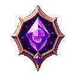
Мир и сюжетWorld & Story«Ellia's Phantasm» — чиби тап-RPG о походе сквозь 14 актов (700 этапов). Когда Бездна пробудилась, рядом с героиней встала эльфийка Эллия — и поход начался: от Изумрудной рощи до Театра Истинного.“Ellia's Phantasm” is a chibi tap-RPG about a journey through 14 acts (700 stages). When the Abyss awoke, the elf Ellia took her place beside the heroine — and the journey began: from the Emerald Grove to the Theatre of the True.
Первая половина пути ведёт к Владыке демонов — вратам 8-го акта (этап 400). Но его падение срывает декорации: Сад Вечности оказывается расписным холстом, а за ним — изнанка мира на нитях. Шесть глубинных актов ведут к Истинному Манипулятору — руке, что дёргала за струны каждого злодея (этап 700, финал кампании).
После финала открывается Морской Атлас — бесконечная эндгейм-система: карты актов тиров T1–T16 поднимают из моря острова, а в глубине ждёт Повелитель Глубин.
The first half of the road leads to the Demon Lord — the gate of act 8 (stage 400). But his fall tears the scenery away: the Garden of Eternity turns out to be a painted canvas, and behind it lies the underside of the world, strung on threads. Six deeper acts lead to the True Manipulator — the hand that pulled every villain's strings (stage 700, the campaign finale).
Past the finale the Naval Atlas opens — the endless endgame: act maps of tiers T1–T16 raise islands from the sea, and the Overlord of the Deep waits below.
Лор и легендыLore & Legends
🌍 Мир АэрисThe World of Aeris
Мир зовётся Аэрис. Шесть земель, у каждой свой климат и свой набор бед: Изумрудная роща, Стылые пики, Пепельная кальдера, Сумрачный лес, Песчаное море и Бездна. Пять из них жили как умели. Шестая однажды проснулась не в духе, и дальше вы уже примерно догадываетесь.
В ту же ночь мужское население мира Аэрис исчезло разом. Не пало в бою, не ушло в поход, а именно исчезло: Бездна утянула всех в другое измерение за одну ночь. Ни тел, ни следов, ни записок. Остались пустые кузницы, пустые казармы и ужин, который никто не доел. Мир проснулся без половины себя и справился с этим, честно говоря, подозрительно быстро.
Виноват Архонт Бездны, бывший страж света. Карьера у него сложилась образцово: сначала свет, потом усталость, потом глубокий минор, потом врата настежь. Заодно он переубедил хранителей шести земель, тех самых, что веками стерегли покой, так что каждый владыка их врат теперь его наместник. Свалишь одного, Бездонный Трон вздрогнет. Свалишь всех, и трону не на чем будет стоять. Идея посадить свою власть на шесть опор, каждую из которых можно убить, была не лучшей в его жизни.
Пророчество, конечно, тоже было. Оно обещало героя: «того, кто протапает все земли и надаёт злу по щам у самого истока». Стиль спорный, зато по делу. Героя, как мы выяснили из текста выше, в наличии не нашлось, так что пришла героиня. Одну её Аэрис не бросает: по всему миру просыпаются защитницы. Эльфийки, рыцари, чародейки, драконицы. У каждой свой норов, своё мнение о правильном бое и отдельное мнение о том, как ты играешь.
За краем шести земель мир, вопреки ожиданиям, не кончается. Там лежат Звёздная пустошь и Сад Вечности, а у садовых врат ждёт Владыка демонов: сад он захватил, садовницу выгнал и уселся хозяйничать. Когда падает он, выясняется неприятное: Сад был расписным холстом, так что ухаживать там всё равно было не за чем. За холстом видна изнанка мира, вся на нитях, и кто-то держал эти нити всё то время, пока героиня старательно спасала декорацию.
Дальше шесть Глубин и Истинный Манипулятор. Его зовут Кассий, и он дёргал за струны каждого злодея, которого героиня встретила по дороге, включая самого Архонта. А сам Архонт, к слову, приходится героине роднёй. Узнаёт она об этом в самом конце, потому что такие вещи всегда выясняются в самом конце.
The world is called Aeris. Six lands, each with its own weather and its own set of troubles: the Emerald Grove, the Frozen Peaks, the Ashen Caldera, Gloomwood, the Sand Sea and the Abyss. Five of them managed. The sixth woke up in a foul mood one day, and you can probably guess the rest.
That same night the entire male population of Aeris vanished at once. Not fallen in battle, not marched off to war: simply gone. The Abyss pulled all of them into another dimension in a single night. No bodies, no traces, no notes. What was left was empty forges, empty barracks and dinner nobody finished. The world woke up missing half of itself and coped with that, frankly, suspiciously well.
The blame goes to the Archon of the Abyss, a former warden of light. His career went strictly by the book: light first, then fatigue, then a deep minor key, then the gates thrown wide open. He also talked the wardens of the six lands around, the very ones who had kept the peace for centuries, so every lord standing at their gates is now his vassal. Bring one down and the Bottomless Throne shudders. Bring them all down and the throne has nothing left to stand on. Resting your power on six pillars, every one of which can be killed, was not the finest idea of his life.
There was a prophecy too, naturally. It promised a hero: “the one who taps through every land and gives evil a thrashing at the source”. Questionable phrasing, sound content. As established above, no hero was in stock, so a heroine came instead. Aeris does not leave her alone, though: defenders wake all across the world. Elves, knights, sorceresses, dragonkin. Each with her own temper, her own idea of a proper fight, and a separate opinion on how you play.
Past the edge of the six lands the world, against all expectations, does not end. Out there lie the Astral Waste and the Garden of Eternity, and at the garden gates waits the Demon Lord: he seized the garden, drove out the woman who tended it and settled in as its owner. When he falls, something unpleasant comes to light: the Garden was a painted canvas, so there had never been anything to tend in the first place. Behind it lies the underside of the world, all of it strung on threads, and somebody had been holding those threads the entire time the heroine was diligently saving the scenery.
Then come six Deeps and the True Manipulator. His name is Cassius, and he pulled the strings of every villain the heroine met along the way, the Archon included. And the Archon, for the record, turns out to be her own kin. She learns this at the very end, because things like that are always learned at the very end.
📖 Истории земельChronicles of the Lands показываются при входеshown on entry
Входя в землю впервые, героиня видит страницу истории. Дальше шести земель записи не ведутся — с Звёздной пустоши рассказ подхватывают сами акты и реплики владык.Entering a land for the first time, the heroine is shown a page of the chronicle. The record stops after the six lands — from the Astral Waste onward the story is carried by the acts themselves and by the lords' parting words.
🎀 Загадки ЭллииEllia's Riddles 14
На карте каждого акта есть зона-загадка. Эллия вспоминает что-нибудь из вашего пути и задаёт вопрос с тремя ответами — ответы каждый раз перемешиваются. Верный даёт одну единицу «уровневого золота», неверный — ничего, но зона в любом случае закрывается. Драки тут не бывает никогда, а кнопка «Позже» позволяет уйти до ответа и вернуться.Every act map holds a riddle zone. Ellia recalls something from your road and asks a question with three answers — shuffled every time. A right answer pays one unit of “level-gold”, a wrong one pays nothing, and either way the zone closes. There is never a fight here, and the “Later” button lets you walk away before answering and come back.
Показать все ответы (спойлеры!)Show all answers (spoilers!)
💬 Помнишь, как всё начиналось? Когда Бездна впервые вздохнула тьмой — кто первым встал с тобой плечом к плечу?Remember how it all began? When the Abyss first breathed out its dark — who was the first to stand at your side?
Кто первой поклялась не отступать, пока тьма не падёт?Who first swore not to retreat until the dark had fallen?
Эллия ✔ · Снежная Императрица · СильвинаEllia ✔ · The Snow Empress · Sylvina
🌸 Хи~ конечно я. И слова своего до сих пор держусь.Hee~ me, of course. And I still hold to my word.
💬 Тут наверху дыхание стынет прямо в воздухе. А про Снежную Императрицу помнишь легенду?Up here your very breath freezes in the air. Do you recall the legend of the Snow Empress?
Что, по преданию пиков, способно растопить ледник?What, the peaks' legend says, can melt the glacier?
Одна слеза ✔ · Первый луч солнца · Древняя песньA single tear ✔ · The first ray of sun · An ancient song
🌸 Верно! Одна-единственная слеза. Сердце тает не от жара.Right! A single tear. A heart melts not from heat.
💬 Чувствуешь, как земля истекает огнём? Сюда ведь приходят не просто так — за чем-то особенным.Feel how the earth bleeds fire? People come here for a reason — for something rare.
За чем пиромантки идут в Пепельную кальдеру?What do the pyromancers seek in the Ash Caldera?
За искрой, что не гаснет ✔ · За золотом бесов · За кровью саламандрA spark that never dies ✔ · The imps' gold · Salamander blood
🌸 Да! За искрой, что не гаснет. Ради неё и терпят весь этот жар.Yes! A spark that never dies. For it they endure all this heat.
💬 Сюда не доходит свет ни одной из лун... Слышишь, как шепчут призраки? Осторожнее с ними.No moonlight reaches here at all... Hear the ghosts whisper? Be wary of them.
Чем призраки Сумрачного леса заманивают путников?With what do the Dusk Wood's ghosts lure travellers?
Аурой морока ✔ · Золотой тропой · Ложной картойAn aura of dread-haze ✔ · A golden path · A false map
🌸 Точно — аурой морока. Идёшь на голос и не замечаешь тумана.Exactly — an aura of dread. You follow the voice and miss the fog.
💬 Под этими барханами спят целые забытые царства. И мираж... ох, мираж тут коварный.Whole forgotten kingdoms sleep beneath these dunes. And the mirage... oh, the mirage here is cruel.
Куда чаще всего приводит мираж в песках?Where does the desert mirage most often lead?
К костям тех, кто поверил ✔ · К прохладному оазису · К царским сокровищамTo the bones of believers ✔ · To a cool oasis · To royal treasure
🌸 Увы, да — к костям поверивших. Вода тут почти всегда обман.Alas, yes — to the bones of believers. Water here is nearly always a lie.
💬 Вот она — рана на теле мира. Тут нет ни верха, ни низа, лишь голод. Кто вообще смог сюда дойти?Here it is — the wound in the world. No up, no down, only hunger. Who could ever reach this place?
Кто сумел дойти до сердца Бездны и не сгинуть?Who reached the Abyss's heart and did not perish?
Те, чьё пламя ярче любой звезды ✔ · Самые быстрые · Самые тихиеThose whose flame outshines any star ✔ · The swiftest · The quietest
🌸 Верно. Только тот, чьё пламя в груди ярче звезды. Как твоё.Right. Only one whose inner flame outshines a star. Like yours.
💬 Смотри, сколько павших светил дрейфует вокруг... Говорят, кто пройдёт пустошь до конца — кое-что услышит.Look how many fallen stars drift about... They say one who crosses the waste hears something.
Что услышит прошедший Звёздную пустошь?What does one hear who crosses the Star Waste?
Имя самой первой звезды ✔ · Зов родного дома · Свою судьбуThe name of the very first star ✔ · A call from home · Their own fate
🌸 Да! Имя самой первой звезды. Немногим дано его услышать.Yes! The name of the very first star. Few are given to hear it.
💬 Первая роща, из чьих корней проросли все миры... Красиво, правда? Но у этой красоты страшная изнанка.The first grove, from whose roots all worlds grew... Beautiful, no? But its beauty hides a dreadful truth.
Чем на самом деле оказался Сад Вечности?What did the Garden of Eternity truly turn out to be?
Лишь декорацией на нитях ✔ · Настоящим раем · Тюрьмой боговMerely a set on strings ✔ · A true paradise · A prison of gods
🌸 Именно. Лишь декорация — а за ней тянутся нити кукловода.Exactly. Merely a set — and behind it run the puppeteer's strings.
💬 Ну вот, краска и осыпалась... Видишь эти балки и тросы? На чём же держится весь мир?There, the paint has flaked away... See these beams and cables? What holds the whole world up?
На чём держится мир Изнанки Сада?What holds the world of the Garden's Underside together?
На натянутых нитях ✔ · На древних корнях · На тяжёлых цепяхOn taut strings ✔ · On ancient roots · On heavy chains
🌸 Да, на нитях. Слышишь, как звенит натянутый шёлк?Yes, on strings. Hear the taut silk hum?
💬 Осторожно с отражениями — они тут живут своей жизнью. И твой двойник где-то рядом...Careful with the reflections — they live their own lives here. And your twin is somewhere near...
Что укажет дорогу дальше в Стеклянной Бездне?What points the way onward in the Glass Abyss?
Разбитое зеркало ✔ · Твой двойник · Отражение звездыA shattered mirror ✔ · Your twin · A star's reflection
🌸 Верно — разбитое зеркало. Только не вглядывайся в него слишком долго.Right — a shattered mirror. Just don't gaze into it too long.
💬 Тёплый пепел, живой и голодный... Погасшие светила так и тянутся к теплу. Зачем, как думаешь?Warm ash, alive and hungry... The spent stars reach for warmth. Why, do you think?
К чему тянутся погасшие звёзды в Пепле Звёзд?What do the spent stars reach for in the Star-Ash?
К теплу — вспыхнуть в последний раз ✔ · К вечной тьме · К свету луныWarmth — to blaze one last time ✔ · Eternal darkness · The light of the moon
🌸 Да! К теплу — ради последней вспышки. Береги своё, они и его заберут.Yes! To warmth — for one last flare. Guard yours, or they'll take it too.
💬 Каждая нить тут — чья-то судьба, а каждый узел — оборванная жизнь. Ткач следит за нами. Не спеши рвать...Every thread here is someone's fate, every knot a life cut short. The Weaver watches. Don't rush to tear...
Что случится, если порвать не ту нить Мироздания?What happens if you tear the wrong thread of Creation?
Целый мир исчезнет ✔ · Родится новый мир · Ровным счётом ничегоA whole world vanishes ✔ · A new world is born · Nothing at all
🌸 Верно, и это жутко — целый мир исчезнет, будто его и не было.Right, and it's chilling — a whole world vanishes, as if it never was.
💬 Холодно как... Падший хранитель Юф не поднимет меча. Он поступит куда хуже. Ты ведь помнишь, зачем мы здесь?So cold... The Warden of the End won't raise a blade. He'll do something far worse. You do remember why we're here?
Как одолеть Хранителя, что не сражается, а забывает тебя?How do you beat a Warden who does not fight, but forgets you?
Помнить, зачем пришла ✔ · Забыть весь страх · Назвать его имяRemember why you came ✔ · Forget all fear · Name him aloud
🌸 Да. Помни, зачем пришла — и порог тебя пропустит. Я напомню, если что.Yes. Remember why you came — and the threshold lets you pass. I'll remind you if need be.
💬 Вот и последняя сцена... Все злодеи были лишь куклами. И тот, в свете софита — он и есть ответ.The final scene at last... Every villain was just a puppet. And the one in the spotlight — he is the answer.
Кем Истинный Манипулятор был для всех злодеев мира?What was the True Manipulator to every villain of the world?
Тем, кто дёргал за их струны ✔ · Их жертвой · Их создателем-богомThe one who pulled their strings ✔ · Their victim · Their god and maker
🌸 Верно. Он дёргал за струны всех — и Кукольника, и Владыки, и самой судьбы. Пора оборвать последнюю нить.Right. He pulled every string — the Puppeteer's, the Lord's, fate's own. Time to snap the last thread.
Акты и владыкиActs & Lords
Каждый акт — 50 этапов по 50 врагов (50-й враг этапа — мини-босс, 50-й этап — владыка врат). Владыка врат — стена: без нужного отряда он поглощает 90% урона (см. Гейты).Each act is 50 stages of 50 foes (the 50th foe of a stage is a mini-boss; the 50th stage is the gate lord). The gate lord is a wall: without the required squad he shrugs off 90% of the heroine's damage (see Gates).
Изумрудная рощаEmerald Grove
Колыбель света, где деревья помнят первую песню мира. В её мшистых корнях дремлют фейри, а изумрудные жуки и шаловливые грибы-прыгуны стерегут росистые поляны. Говорят, кто услышит шёпот рощи на рассвете — вернётся домой целым.A cradle of light where the trees still remember the world's first song. Faeries doze among its mossy roots while emerald beetles and mischievous hopping mushrooms guard the dewy glades. They say whoever hears the grove whisper at dawn returns home whole.
«Гнилые корни Сильвины иссыхают, и роща вздыхает свободно. Первая тень развеяна.Sylvina's rotting roots wither and the grove breathes free at last. The first shadow is lifted.»
Стылые пикиFrozen Peaks
Над облаками, где дыхание стынет в воздухе, царят ледяные девы и хрустальные нетопыри. Древние пастухи рассказывают о Снежной Императрице, чьё сердце замёрзло вместе с этими склонами — и о том, что одна слеза может растопить ледник.Above the clouds, where breath freezes in the air, rule ice maidens and crystal bats. Old shepherds tell of a Snow Empress whose heart froze along with these slopes — and that a single tear could thaw a glacier.
«Ледяная хватка Кольдрака трескается. Далёкий Трон Архонта дрогнул впервые.Koldrak's icy grip shatters. The Archon's distant Throne trembles for the first time.»
Пепельная кальдераAshen Caldera
Жерло спящего исполина, где сама земля истекает огнём. Из углей рождаются бесы и саламандры, а пиромантки приходят сюда за искрой, что не гаснет. Неосторожный путник обращается в пепел прежде, чем успеет вскрикнуть.The maw of a sleeping titan, where the earth itself bleeds fire. Imps and salamanders are born from the embers, and pyromancers come seeking the spark that never dies. The careless are turned to ash before they can cry out.
«Магмар рушится в собственное жерло, и кальдера гаснет до тлеющих углей.Magmar collapses into his own crater, and the caldera dims to embers.»
Сумрачный лесGloomwood
Чаща, куда не доходит свет ни одной из лун. Тени здесь обретают голос, а призраки заманивают путников в туман аурой морока. Колдуньи плетут в этих стволах проклятья, и даже храбрейшие говорят шёпотом.A thicket no moonlight ever reaches. Here shadows find a voice and ghosts lure travelers into the haze with their spectral aura. Witches weave curses into these trunks, and even the bravest speak only in whispers.
«Туман морока редеет — Ноктис рассеян, и лес впервые видит лунный свет.The haze of dread thins — Noctis is undone, and the wood sees moonlight at last.»
Песчаное мореSand Sea
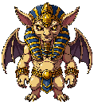
Океан песка, под которым погребены забытые царства. Древние стражи-исполины стерегут гробницы, а под барханами скользят песчаные черви. Мираж сулит воду — но чаще ведёт к костям тех, кто поверил.An ocean of sand burying forgotten kingdoms. Colossal guardians watch over the tombs while sand-worms glide beneath the dunes. A mirage promises water — but more often leads to the bones of those who believed.
«Каменная маска Сетха раскалывается, и пески вновь умолкают над гробницами.Seth's stone mask cracks, and the sands fall silent over the tombs once more.»
БезднаThe Abyss
Рана на теле мира, откуда хлынула тьма. Здесь нет ни верха, ни низа — лишь голод древнего зла, что пожирает свет. Дойти до сердца Бездны и не сгинуть смогли лишь те, чьё пламя в груди ярче любой звезды.A wound upon the body of the world, from which the dark first poured. There is no up nor down here — only the hunger of an ancient evil that devours light. Only those whose inner flame burns brighter than any star reach its heart and live.
«Сангра низвергнута в Бездну, что её породила. Голод тьмы отступает.Sangra is cast back into the Abyss that bore her. The hunger of the dark recedes.»
Звёздная пустошьAstral Waste
За изнанкой Бездны раскинулась пустошь павших светил. Здесь дрейфуют осколки созвездий и духи, что были звёздами; их свет холоден и голоден. Говорят, кто пройдёт пустошь, услышит имя самой первой звезды.Past the underside of the Abyss spreads a waste of fallen stars. Shards of constellations drift here, and spirits that once were stars — their light cold and hungry. They say whoever crosses the waste will hear the name of the very first star.
«Нихиль гаснет, как догоревшая звезда, и пустошь озаряется их прощальным светом.Nihil gutters out like a spent star, and the waste glows with its parting light.»
Сад ВечностиGarden of Eternity
В сердце всего сущего цветёт Сад Вечности — первая роща, из чьих корней проросли все миры. У его врат встал Владыка демонов, последний страж лжи. Но когда он падёт, откроется страшная правда: сам Сад был лишь декорацией, а за ней тянутся нити истинного кукловода.At the heart of all that is blooms the Garden of Eternity — the first grove, from whose roots every world sprouted. At its gates stands the Demon Lord, the last warden of the lie. But when he falls, a dreadful truth is revealed: the Garden itself was mere scenery, and behind it stretch the strings of the true puppeteer.
♻ Терновый Король ВейланVeylan the Thorn King — держит врата в бесконечных повторах актаholds the gate in endless reruns of the act
«Терновый Король склоняется, и Сад Вечности признаёт новую хранительницу.The Thorn King bows, and the Garden of Eternity acknowledges a new warden.»
Изнанка СадаUnderside of the Garden
Когда Владыка демонов пал, Сад осыпался, как краска со старого холста. Под ним — изнанка мира: балки, тросы и мерцающие нити, уходящие ввысь к невидимым рукам. Здесь марионетки бунтуют против собственных струн, а воздух звенит от натянутого шёлка.When the Demon Lord fell, the Garden crumbled like paint off an old canvas. Beneath it lies the underside of the world: beams, cables and shimmering threads climbing toward unseen hands. Here marionettes rebel against their own strings, and the air rings with taut silk.
«Тень оседает пустым плащом — но нити, что её держали, тянутся ещё выше.The shade collapses into an empty cloak — yet the strings that held it climb higher still.»
Стеклянная БезднаGlass Abyss
Провал из чёрного стекла, где отражения живут своей жизнью. Здесь героиню встречает двойник — та, кем она могла бы стать, если бы поддалась нитям. Разбитое зеркало укажет дорогу дальше; но, вглядевшись слишком долго, героиня рискует потерять себя в отражении.A chasm of black glass where reflections live lives of their own. Here the heroine's double meets her — the one she might have become had she yielded to the strings. Shatter the mirror and the shards will show the way onward; stare too long and you will lose yourself in the reflection.
«Стекло идёт трещиной, и двойник рассыпается осколками отражённого света.The glass fractures, and the twin scatters into shards of reflected light.»
Пепел ЗвёздAsh of Stars
Там, где умирают звёзды, оседает их пепел — тёплый, голодный, живой. Погасшие светила тянутся к любому теплу, чтобы вспыхнуть в последний раз. Пожиратель душ Найтара бродит между ними, собирая догорающие жизни в свою корону.Where stars die, their ash settles — warm, hungry, alive. Burnt-out suns reach for any warmth, longing to flare one last time. Naythara the Soul-Devourer wanders among them, gathering guttering lives into her crown.
«Корона погасших звёзд меркнет — украденные судьбы возвращаются их хозяевам.Its crown of spent stars dims — the stolen fates return to those they were torn from.»
Нити МирозданияThreads of Creation
Гигантское полотно, где каждая нить — чья-то судьба, а каждый узел — прерванная жизнь. Ткачиха Кошмаров Велисса сидит за станком, вплетая в узор дурные сны смертных. Порви не ту нить — и целый мир исчезнет, будто его и не было.A colossal weave where every thread is someone's fate and every knot a life cut short. Velissa the Nightmare-Weaver sits at the loom, working mortals' bad dreams into the pattern. Tear the wrong thread and an entire world vanishes as if it never was.
«Станок замолкает, и дурные сны развеиваются, не сплетённые до конца.The loom falls silent, and the nightmares unravel before they are finished.»
Престол ЗабвенияThrone of Oblivion
Холодный зал у самого края всего, где на троне из потухших имён восседает Падший хранитель Юф. Он не сражается — он забывает героиню, и вместе с памятью тает её сила. Лишь тот, кто помнит, зачем пришёл, минует этот порог.A cold hall at the very edge of everything, where Yuf the Fallen Warden sits on a throne of extinguished names. It does not fight — it forgets the heroine, and with her memory her strength melts away. Only those who remember why they came may pass this threshold.
«Трон из имён рушится — и героиня вспоминает своё имя, целое и незабытое.The throne of names collapses — and the heroine remembers her own, whole and unforgotten.»
Театр ИстинногоTheatre of the True One
Пустой театр на изнанке реальности, где каждый герой и каждый злодей был лишь куклой на нитях. В свете единственного софита ждёт Кассий, истинный владыка — тот, кто дёргал за струны Кукольника, Владыки демонов и самой судьбы. Последний акт начинается. Кто здесь зритель, а кто — марионетка?An empty theatre on the underside of reality, where every hero and every villain was only a puppet on strings. In the light of a single spotlight waits Cassius, the True Sovereign — the one who pulled the strings of the Puppeteer, the Demon Lord and fate itself. The final act begins. Who here is the audience, and who the marionette?
«Последняя нить рвётся. Кукловод падает со сцены, и мир — впервые за всё время — принадлежит только героине. Занавес.The last thread snaps. The puppeteer falls from the stage, and the world — for the first time ever — is yours alone. Curtain.»
⚔ Тактика на владыкBoss Tactics
Подробно по каждому владыке: КОГДА срабатывает механика (процент HP / таймер), ЧТО он делает и КАК его бить.Every lord in detail: WHEN the mechanic fires (HP% / timer), WHAT it does and HOW to beat it.
⚔ Владыки врат (акты 1–14)⚔ Gate Lords (acts 1–14)
Акт 1 · Сильвина — на 50% HP из земли лезут три корня: пока жив хоть один, она неуязвима и регенерирует. Бей: сломай все три (по 5 нажатий) → окно урона и 10 секунд без её регена.
Акт 2 · Кольдрак — в начале боя (100%) заковывает всех напарниц в глыбы: −20% урона по нему за каждую замороженную. На 50% — живая стужа. Бей: разбивай глыбы, чтобы вернуть себе урон.
Акт 3 · Магмар — его кровожадность «дышит»: 10 секунд горит, 10 молчит. В паузу (пепел осел) он получает +20% урона — копи нюки на это окно. На 50% опутывает отряд пеплом (замедление), на 20% — пепельная корка (−40% входящего урона до конца боя).
Акт 4 · Ноктис — с начала давит напарниц стихии Бездны (бьют вполсилы). На 50% гасит арену и оставляет вместо себя ГЛАЗ (25% его HP): пока Глаз цел, весь урон уходит в него. Бей: разбей Глаз → жрец вернётся уже с аурой сна.
Акт 5 · Сетх — в начале и на 50% замуровывает героиню: своих рук нет, выручает только отряд (20 ударов освобождают).
Акт 6 · Сангра — на 70% и 30% выпускает стаю мышей: пока стая жива, она неуязвима и полупрозрачна. Бей: найди верную мышь (по алому свечению) — верная → −10% HP; ошибся → +50% отхил.
Акт 7 · Нихиль — под ногами копится синяя шкала пожирания: каждый её процент съедает урон, на 100% — неуязвим. Бей: сбивай вспыхивающие звёзды (раз в 5 секунд), держи шкалу у нуля.
Акт 8 · Владыка Демонов — на 70% поджигает сад (отряд −40% темпа до конца боя), на 30% раз в 5 секунд закрывается щитом — лови окна между щитами.
Акт 9 · Кукловод — с начала каждые 5 секунд усыпляет одну напарницу (буди одним тапом). Когда весь отряд спит — он неуязвим. Бей: не давай всем уснуть, буди по очереди.
Акт 10 · Зеркальный Двойник — на 50% на 15 секунд надевает облик героини: напарницы не смеют бить и стоят. Заодно вешает лёгкое проклятие (снимается золотом). Бей: переждать 15 секунд.
Акт 11 · Пожиратель Судеб — с начала ест твоё золото (5%/с — приходи нищей). На 50% натягивает свой облик на весь отряд: пока в облике, отряд теряет −5% скорости боя в секунду до конца боя. Бей: сбивай облик тапами по напарницам быстро.
Акт 12 · Ткач Кошмаров — призывает призраков (до 4): каждый глушит урон (×0.7). Бей: развеивай их — но половина ударов проходит сквозь морок.
Акт 13 · Хранитель Финала — раз в 10 секунд закрывается щитом; на 75/50/35% выпускает котика, который уводит напарницу с арены до конца боя. Бей: спугни котика 2 нажатиями, пока он летит.
Акт 14 · Истинный Манипулятор — копит ауры: на 60% сон и бреши, на 30% заморозка, на 20% замедление. Плюс раз в 10 секунд открывает БРЕШЬ — окно, куда бить нельзя (удар лечит его). Бей: не бей в брешь, лови окно после неё.
Act 1 · Sylvina — at 50% HP three roots rise: while any lives she is invulnerable and regenerates. Beat it: break all three (5 taps each) → a damage window and 10s with no regen.
Act 2 · Koldrak — at the start (100%) he seals every companion in ice: −20% damage to him per frozen ally. At 50% — living cold. Beat it: break the ice to win your damage back.
Act 3 · Magmar — his bloodlust "breathes": 10s on, 10s off. In the pause (ash settled) he takes +20% damage — save nukes for that window. At 50% he ash-slows the squad; at 20% an ash crust cuts all incoming damage by 40% for the fight.
Act 4 · Noctis — from the start he weakens Abyss-element companions (half strength). At 50% he darkens the arena and leaves an EYE (25% of his HP): while it lives all damage goes into it. Beat it: break the Eye → the priest returns with a sleep aura.
Act 5 · Seth — at the start and at 50% he entombs the heroine: no taps of your own, only the squad frees her (20 hits).
Act 6 · Sangra — at 70% and 30% she looses a mouse swarm: while it lives she's invulnerable and semi-transparent. Beat it: find the right mouse (red glow) — right → −10% HP; wrong → +50% heal.
Act 7 · Nihil — a blue devour gauge fills under your feet: each percent eats your damage, at 100% he's invulnerable. Beat it: break the flaring stars (every 5s), keep the gauge near zero.
Act 8 · Demon Lord — at 70% he sets the garden ablaze (squad −40% tempo for the fight), at 30% he shields every 5s — catch the windows between shields.
Act 9 · Puppeteer — from the start he sleeps one companion every 5s (1 tap wakes her). When the whole squad sleeps he's invulnerable. Beat it: don't let them all doze — wake them in turn.
Act 10 · Mirror Twin — at 50% he wears the heroine's face for 15s: companions won't strike and stand idle. He also lays a light curse (dispel with gold). Beat it: just wait out the 15s.
Act 11 · Fate Devourer — from the start he eats your gold (5%/s — arrive poor). At 50% he masks the whole squad: while masked the squad loses −5% battle speed per second for the fight. Beat it: tap the masks off fast.
Act 12 · Nightmare Weaver — he raises ghosts (up to 4): each muffles damage (×0.7). Beat it: dispel them — but half your hits pass through the haze.
Act 13 · Keeper of the Finale — he shields every 10s; at 75/50/35% he sends a cat that carries a companion off the field for the fight. Beat it: scare the cat off with 2 taps while it flies.
Act 14 · True Manipulator — he stacks auras: at 60% sleep and rifts, at 30% freeze, at 20% slow. Plus every 10s he opens a RIFT — a window where striking heals him. Beat it: don't hit the rift, burst the opening after.
🗝 Одноразовые подземелья🗝 One-time Dungeons
Логово · Корнегрыз — на 75/50/25% зарывается на 6 секунд, вылезают 3 бугра земли: сильнее трясётся ВЕРНЫЙ. Бей: выкопай верный (20 нажатий) вовремя → −10% HP; ошибся или не успел → отхил до 100% и фазы заново.
Ледяная гробница · Фростан — на каждом пороге запечатывает напарницу в глыбу (10 нажатий, 5 секунд). Не успел — глыба становится вечной, напарница выбывает до конца боя. До 3 заморозок. Бей: выбивай глыбу быстро.
Кузня Пепла · Вулмар — каждые 8 секунд раскаляется на 4 (светится оранжевым): тап по нему не проходит и лечит его. Напарницы с оружием бьют как обычно. Бей: самой лучше переждать раскал, бить отрядом.
Чертог Теней · Умбрель — на 75/50/25% становится прозрачной и неуязвимой, ставит 2 копии. Бей: ту, что плотнее и с тенью под ногами (5 нажатий) — верная → снова уязвима; фальшивка → полный отхил и проклятие.
Гробница Дюн · Нефара — песочные часы утекают за 7 секунд: досыпались → +30% отхил (и так весь бой). Бей: переворачивай часы (5 нажатий) до того, как высыплется песок.
Сердце Бездны · Иргот — каждые 6 секунд на 6 каменеет (серый, неуязвим). НЕ бей по камню (получишь «Раскол» −20% урона, до −100%); переждёшь молча → «Терпение» +20% (до +100%). Бей: серый спрайт = стоп, бей только когда снова цветной.
Обсерватория · Астельм — каждые 5 секунд зажигает 4 звезды (живут 3 секунды). Сбей все — ничего; за каждую несбитую при гашении → +20% отхил. Бей: держи звёзды под контролем, гаси все четыре.
Оранжерея · Флориан — каждые 7 секунд оплетает напарницу лозой. Не выбил за 3 секунды → она становится зелёным элементалем до конца боя и лечит его +5%/5с. Бей: выбивай путы быстро (4 нажатия).
Провал Изнанки · Грумвор — на каждом пороге ставит зеркало: пока цело, весь урон уходит в никуда. Бей: 30 ударов — и стекло падёт.
Зеркальная Бездна · Кристан — раз в 10 секунд поднимает зеркального двойника (до 4): каждый режет весь урон на треть. Бей: развеивай (6 ударов), не давай им копиться.
Пепелище · Пиррекс — 3 угля тлеют весь бой; раскалившись, уголь каждые 5 секунд лечит его 22% и жжёт 75 маны. Бей: остужай угли одним нажатием, пока не раскалились.
Ткацкая · Аранея — тянет нити к 3 напарницам (бьют вполсилы). Рвать нить невыгодно: −15% урона за каждую до конца боя. Но и ноль нитей на арене = проклятие. Бей: держи ровно одну нить.
Чертог Забвения · Люрд — каждые 10 секунд стирает одно твоё заклинание до конца боя; при 0 маны вдобавок налагает проклятие (если ещё не проклята). Наказывает медлительность и пустую ману. Бей: заканчивай бой быстрее и держи хоть каплю маны.
Театр Марионеток · Арлекс — открывает бой во всю силу: проклятие на героиню (−60% тапа) и весь отряд разом по клеткам. Бей: первые полминуты — разбивание клеток.
Lair · Rootgnawer — at 75/50/25% he burrows for 6s and 3 earth mounds swell: the RIGHT one shakes harder. Beat it: dig the right (20 taps) in time → −10% HP; wrong or too slow → he heals to 100% and the phases restart.
Icy Tomb · Frostan — at each threshold he seals a companion in ice (10 taps, 5s). Miss it and the block turns permanent, she's out for the fight. Up to 3 freezes. Beat it: break the ice fast.
Cinder Forge · Vulmar — every 8s he glows white-hot for 4s (orange): a tap won't land and heals him. Armed companions hit as usual. Beat it: better to wait out the heat, lean on the squad.
Hall of Shadows · Umbrel — at 75/50/25% he turns transparent and invulnerable and raises 2 copies. Beat it: strike the solid one with a shadow at its feet (5 taps) — right → vulnerable again; decoy → full heal and a curse.
Dune Tomb · Nefara — her hourglass runs out in 7s: let it empty → +30% heal (all fight long). Beat it: flip it (5 taps) before the sand runs out.
Heart of the Abyss · Irgot — every 6s for 6s he turns to stone (grey, invulnerable). DON'T strike the stone (Sunder −20% damage, up to −100%); wait it out in silence → Patience +20% (up to +100%). Beat it: grey sprite = stop, hit only when he's coloured again.
Observatory · Astelm — every 5s she lights 4 stars (they live 3s). Break them all — nothing; for each one left when they fade → +20% heal. Beat it: keep the stars in check, clear all four.
Everbloom · Florian — every 7s a vine binds a companion. Fail to free her in 3s → she turns into a green elemental for the fight, healing him +5%/5s. Beat it: cut the vine fast (4 taps).
Underside Rift · Grumvor — at each threshold he raises a mirror: while it holds all damage is voided. Beat it: 30 hits and the glass shatters.
Mirror Abyss · Kristan — every 10s he raises a mirror-double (up to 4): each cuts all damage by a third. Beat it: dispel them (6 hits), don't let them pile up.
Star-Ash · Pyrrex — 3 embers smoulder all fight; once white-hot an ember heals him 22% and burns 75 mana every 5s. Beat it: cool the embers with a tap before they flare.
Fate-Loom · Aranea — she threads 3 companions (half strength). Severing is costly: −15% damage per cut thread for the fight. But zero threads on the field = a curse. Beat it: keep exactly one thread.
Hall of Oblivion · Lurd — every 10s he erases one of your spells for the fight; at 0 mana he also lays a curse (unless already cursed). He punishes slowness and an empty mana pool. Beat it: finish faster and keep a little mana.
Puppet Theatre · Arlex — he opens at full force: a curse on the heroine (−60% tap) and the whole squad caged at once. Beat it: the first half-minute is breaking cages.
⚓ Морской Атлас⚓ Naval Atlas
Финалы обычных островов носят свои имена (не сюжетных владык) и берут ОДНУ фишку по стилю биома (корни / стужа / щиты / морок и т.п.) — не полный карательный сценарий акта.
Эманаторы Глубин (финалы островов влияния): Тритос — жажда Бездны (растёт шкала пожирания, сбивай вспыхивающие звёзды); Нерисса — песнь-щит (раз в 5 секунд закрывается щитом, лови окна); Вельмар — мгла-двойники (прячется среди двух теней, бей ту, что с тенью под ногами).
Повелитель Глубин Тааракс — всплывает с двумя элементалями (зелёный держит отряд, красный запрещает нажатия): убить можно ТОЛЬКО одного. Выбор без правильного ответа — реши, что тебе сейчас дороже.
Ordinary isle finales carry their own names (not the story lords) and take ONE signature trick by biome style (roots / cold / shields / haze, etc.) — not a full punishing act script.
Heralds of the Deep (influence-isle finales): Tritos — Abyss-thirst (a devour gauge fills, break the flaring stars); Nerissa — song-shield (she shields every 5s, catch the windows); Velmar — mist-doubles (hides among two shades, strike the one with a shadow at its feet).
Tharrax, Overlord of the Deep — surfaces with two elementals (green stops the squad, red forbids taps): you may kill ONLY one. A choice with no right answer — decide what matters most right now.
ГероиниHeroines
Героини приходят через Призыв и бьются в отряде (максимум 4 в бою). Роль работает только пока героиня В ОТРЯДЕ и усиливается вехами уровня, редкостью и звёздами. У каждой легендарки — свой гиммик, меняющий бой, и личные перко-пассивки на вехах.Heroines arrive via the Summon and fight in the squad (up to 4 fielded). A role works only while the heroine is IN the squad and scales with level milestones, rarity and stars. Every legendary carries her own battle-bending gimmick plus personal perk passives at milestones.
Крылатая валькирия павшего пантеона. Она ВСЕЛЯЕТСЯ в героиню: та принимает облик Эрис и встаёт в полный рост по центру поля, а отряд обращается мелкими валькириями, кружащими вокруг (и теряющими свои свойства). Сама Эрис не бьёт — бьёт героиня: рука валькирии втрое тяжелее, разит метко и без пощады, а больнее всех достаётся владыкам. Врагов на последнем издыхании карает ярость света — даже владык, а Владык мира она казнит одним ударом. Каждый удар может вскрыть кровоточащую рану.A winged valkyrie of a fallen pantheon. She POSSESSES the hero: the heroine takes Eris's form at the centre of the field while the squad turns into tiny valkyries circling her (losing their traits). Eris herself does not strike — the heroine does: the valkyrie's hand falls three times heavier, striking true and without mercy, and the lords suffer worst of all. Foes on their last breath are smitten by the light's fury — even lords, and World Lords fall to a single blow. Each strike may open a bleeding wound.
Девочка-вампир, старшая из сестёр смерти (Жница Морана — её младшая сестра; вместе в отряде они на 30% злее). Каждый её укус вскрывает неутолимое кровотечение — рана не закроется до самого конца боя. По ногам ползёт зелёный туман: в нём враги мягче, а криты героини злее. Напарницы боятся её и жмутся по краям, замедляя шаг. Каждый её удар несёт героине каплю маны.A vampire girl, the elder of the death sisters (Reaper Morana is her younger sister; together in the squad they are crueller still). Every bite of hers opens an unquenchable wound — it will not close until the very end of the fight. Green mist creeps along the ground: foes soften in it, and the hero's crits grow crueller. The companions fear her and hang back, slowing their step. Each of her hits carries a drop of mana to the hero.
Пробудившаяся истинная форма Эллии — крошечная фея с трепещущими крылышками. Каждый удар телепортирует её в новую точку поля, а с врага сыплется золото, как с его убийства (владыки не в счёт). То и дело она в шутку чеканит героиню (а иной раз — напарницу) БОЛЬШОЙ МОНЕТОЙ: та зреет из серой в золотую — собери её нажатием и получи щедрое золото. Правда, героиня возвращается с проклятием… Несобранная монета так и стоит, а фея знай себе чеканит остальных.Ellia's awakened true form — a tiny fairy with fluttering wings. Every hit teleports her to a new spot, and the foe sheds gold as if slain (lords don't count). Now and then she playfully mints the hero (or, once in a while, a companion) into a BIG COIN: it ripens from grey to gold — tap to collect a generous pile of gold. The hero, though, returns cursed… An uncollected coin just stands there, and the fairy keeps minting the rest.
Последняя из огненных драконов в людском обличье. Её гнев плавил города, а верность — бесценна. Где ступает Игнара, плавится камень и дрожит от жара сам воздух.The last of the fire dragons in human form. Her wrath melted cities; her loyalty, once earned, is beyond price. Where Ignara steps, stone melts and the very air trembles with heat.
Она шагнула в Бездну и вернулась королевой. Тьма — её платье, страх — её корона. Пока Нокс в отряде, Бездна пожирает слабейших — до героини добираются лишь самые стойкие, а тех, кто уже едва дышит, тьма утаскивает сама. Лишь мрачная свита её давит отряду на плечи, и клинки напарниц ходят чуть ленивее.She stepped into the Abyss and returned a queen. Darkness is her gown and fear her crown. While Nox is in the squad, the Abyss devours the weakest — only the hardiest ever reach the heroine, and those already at death's door the dark drags down itself. Yet her grim retinue weighs on the squad, and the companions' blades swing a touch lazier.
Дочь бури. Там, где ступает её нога, небо отвечает громом. Её гроза разгоняет отряд — чем дольше бой, тем чаще мелькают клинки, а с чёрного неба то и дело бьёт молния в самое сердце врага. Одна беда: в грозовой спешке отряду не до выверенных ударов — криты выпадают реже.Daughter of the storm: where she steps, the sky answers with thunder. Her tempest spurs the squad on — the longer the fight, the faster the blades flash, and lightning falls from the black sky into the foe's heart. One flaw: in the storm's haste there is no time for measured strikes, and crits come rarer.
Воплощённый свет — она не разит сама, но благословляет. За плечами героини распускаются два ангельских крыла: пока они горят, её удар мощнее. А с вехи мастерства Серафина осеняет отряд чередой благословений.Light incarnate — she does not strike, she blesses. Two angel wings unfurl behind the heroine's shoulders: while they burn, her strike is mightier. And from her mastery milestone Seraphina graces the squad with a choir of blessings.
Безмолвная фехтовальщица. Её меч видели лишь те, кого он уже рассёк. Пока Цубаки в отряде, нажимать не нужно: стоит прижать палец к боевому экрану и повести — за пальцем тянется светящийся росчерк, и каждое рассечение считается за удар. Води быстрее — руби чаще. Её лунный клинок оставляет на враге кровоточащие рассечения, что сочатся алым ещё долго после взмаха, а удар героини бьёт дважды — второй росчерк приходит из тени первого.A silent duelist beneath the moon. Her blade is seen only by those it has already cut — and none of them lived to tell. While Tsubaki is in the heroine's squad, no need to tap-spam: press a finger to the arena and drag — a glowing trail follows the finger and every stroke counts as a strike. Drag faster to cut more often. Her moon-blade leaves bleeding cuts that weep scarlet long after the swing, and the hero's strike lands twice — the second stroke follows from the shadow of the first.
Императрица вечной зимы. Пока она на поле — идёт снег, а под ногами отряда стынет лёд. В битве с владыками она леденит их время, но и своих подгоняет медленнее.Empress of eternal winter. While she stands on the field it snows, and ice creeps under the squad's feet. Against lords she freezes their very time — yet she chills her own side's pace as well.
Древний дух-хранитель рощ Аэрис в облике рогатой девы. Каждый её удар по владыке вплетает в него росток (виден у ног врага). На пятом ростки ПРОРАСТАЮТ сквозь тушу — из владыки разом вырывается добрый кусок жизни, но дикая сила рощи глушит руки героини, и её нажатия слабеют до конца боя.A guardian spirit of Aeris’ forests in the form of a horned maiden. Each of her hits on a lord weaves a sprout into it; on the fifth they OVERGROW through the beast — a solid piece of the lord's life is torn away at once, but the grove's wild power numbs the hero's hands, and her taps weaken for the rest of the fight.
Демоница страсти из глубин Бездны. Чарами она порабощает героиню — та не может и пальцем шевельнуть, — зато весь отряд под её чарами бьёт куда чаще. Каждое нажатие — воздушный поцелуй, что копит шкалу Подчинения (розовый столбик у героини). Чем полнее шкала, тем яростнее криты отряда и тем твёрже его рука; а когда Подчинение переливается через край, враг покорён — розовеет и тает под любым ударом.Lilith from the depths of the Abyss does not fight side by side — she takes command. Her charm binds the heroine’s will (who only swoons, hearts in her eyes), but in exchange the whole enthralled squad strikes far more often. Every tap is a blown kiss that fills the Sway bar: the fuller it grows, the fiercer the squad's crits and the steadier its hand — and when Sway spills over, the foe is enthralled, blushing pink and melting under every blow.
Хозяйка зачарованных вод. Время от времени она поднимает приливную волну — и та смывает с поля целую горсть обычных врагов разом; лишь владыки стоят против прилива.Nimue rises from the lake’s depths only for the worthy. From time to time she raises a tidal wave that sweeps a whole handful of regular foes off the field at once; only lords stand against the tide.
Она сама не марает рук в бою — вместо этого требует ПЕСЕН. Пока Морриган в отряде, героиня поёт ей песни безумия и не дерётся: чем дольше льётся песня, тем злее бьёт отряд, а на самых тёмных куплетах от напарниц начинает сочиться чёрный туман. С вехи мастерства её пряжа порчи сама вьётся вокруг врага.Morrigan lifts no weapon — it is beneath her. Instead she demands SONGS: while she is in the squad, the hero sings her songs of madness and cannot fight. The longer the song flows, the crueller the squad strikes, and on the darkest verses black mist seeps from the companions. At her mastery milestone her hexweave coils around the foe on its own.
Ведьму Шанателлу не любит никто — и она платит миру тем же. Стоит ей встать в строй, как весь отряд оборачивается стаей летучих мышей и почти теряет силу удара — бьёт в полную мощь лишь она сама. Зато с павших врагов начинают сыпаться части её уникального супер-сета — Регалий Шанателлы.No one ever loved Shantelle, and she has repaid the world in full. The moment she joins the squad, the whole party turns into a swarm of bats and all but loses its striking power — only she herself still hits at full force. But the curse cuts both ways: slain foes start shedding pieces of her unique Regalia — a super-set found no other way.
Дева павших созвездий из Звёздной пустоши. Пока она на поле — небо чернеет и вспыхивает россыпью звёзд. Время от времени она обрушивает на врага звездопад — град осколков погасших светил. Её звёздная мудрость ведёт героиню: поверженные владыки заметно чаще даруют очки древа навыков, но опыт героини копится вдвое медленнее — звёзды учат не тому, чему учит мир.Astrea wanders the Star Waste gathering shards of dead constellations. While she stands on the field, the sky turns black and blazes with stars. Now and then a starfall of cold stellar fire crashes down on the foe. Her star-wisdom guides the heroine: fallen lords grant perk points far more often — but hero XP builds half as fast, for the stars teach what the world does not.
Садовница Сада Вечности, древнее самих богов — и с прескверным характером: светлых не выносит на дух. Её споры травят врага гнилью, что проедает его заживо, — но едкие испарения слепят остальных напарниц, и их удары идут мимо. Там, где она ступает, чаще взлетают золотые светлячки.Verdelia has tended the Garden of Eternity since the dawn of time — with a truly foul temper: she cannot stand the holy. Her spores rot the foe with a gnawing decay that eats it alive — though the acrid fumes blind the other companions, and their strikes go wide. Where she walks, golden fireflies take wing more often.
Бессмертная птица в облике девы. Сколько раз она сгорала дотла — столько же восставала из пепла. В её огне отряд бьётся жарче, а сама героиня, разморённая теплом, ненадолго засыпает у костра. Даже Игнара при виде истинного феникса вспыхивает язычками пламени.An immortal bird in the shape of a maiden. However many times she has burned to ash, as many times she has risen from it. In her fire the squad fights hotter, while the heroine, lulled by the warmth, dozes off by the blaze for a while. Even Ignara flickers with little flames at the sight of a true phoenix.
Первый луч над миром после Долгой Ночи — она сияет ярче всех в строю. Её свет так ярок, что слепит собственных напарниц — их удары то и дело идут мимо, — но каждый промах наполняет шкалу света, и криты героини бьют всё беспощаднее. Стихнут промахи — свет быстро гаснет. А с вехи мастерства Аврора окутывает героиню лучами зари.The first ray over the world after the Long Night — she shines brighter than anyone in the ranks. So bright she blinds her own companions — their strikes stray again and again — yet every miss fills the light bar, and the hero's crits bite ever more mercilessly. When the misses cease, the light quickly fades. At her mastery milestone Aurora wraps the hero in rays of dawn.
Та, что приходит за душами. С ней на поле ложится фиолетовый туман, а из всех синих и фиолетовых напарниц она ВЫТЯГИВАЕТ ДУШИ: те обращаются призраками — не бьют и теряют все свои свойства (духов-прислужниц легендарок коса не берёт). За каждую вытянутую душу коса Мораны рубит ощутимо злее. Зато Тюремщик не может надеть путы на призрака. Пока она на счету, смерть прореживает орды: врагов на этапе меньше.She who comes for souls. With her on the field a violet mist settles, and she PULLS THE SOULS out of every blue and violet companion: they turn into ghosts — no attacks, no traits (legendary familiars are spared her scythe). For every soul she draws, Morana's scythe cuts notably crueller. A silver lining: the Jailer cannot chain a ghost. While she is on the roster, death itself thins the hordes: fewer foes per stage.
Снайпер ветра. Говорят, её стрела догоняет ложь быстрее, чем та слетает с губ, — а когда кажется, что выстрел был один, вторая стрела уже дрожит в цели.They say her arrow outruns a lie before it leaves the lips — and when the shot seems to be one, a second arrow is already trembling in the mark.
Изучала запретные руны Сумрачного леса. Её магия шепчет — и враги слушаются. Внимательнее всех слушают владыки: под её гибельной руной их броня расползается по швам.She studied the forbidden runes of Gloomwood while others fled it. Her magic whispers — and foes obey. The lords listen closest of all: under her doom rune their armour splits at the seams.
Клятвенный защитник. Не отступает — даже когда отступить разумнее. За её широким щитом рука героини бьёт увереннее и твёрже.A sworn protector who never retreats — even when retreat is wiser. Whole companies have weathered storms behind her shield, and behind it the hero's hand strikes surer and harder.
Самые быстрые пальцы в Бездне — да тянутся они к чужому золоту, а не к бою. Что плохо лежало, то уже у неё — и никто не видел когда.The fastest fingers in the Abyss. Whatever lay around now lies with her — and no one ever saw it happen.
Дева Стылых пиков. Её сердце холодное — но за своих она растопит и ледник. Первая встреча с ней — самая студёная: первый удар Сольвейг вымораживает врага до костей.A maiden of the Frozen Peaks with a heart of ice. Yet for her own she would melt a glacier — and anyone who threatens them. The first meeting with her is the coldest: Solveig's first strike freezes a foe to the bone.
Подожгла академию (случайно). Теперь жжёт только тех, кто заслужил, — и уж если подожгла, пламя само доедает остатки.She once burned down an entire academy (by accident). Now she burns only those who deserve it — and once she sets a fire, the flame finishes the leftovers on its own.
Стрелок-громовержец. Её стрелы несут заряд бури и бьют по площади. Перед Громовой Аэллой она благоговеет — и в её грозе обращается ручной молнией.An archer whose arrows carry thunder. She strikes a crowd with a bolt that leaps from foe to foe. She stands in awe of Thunder Aella — and in her tempest becomes a tame bolt of lightning.
Храмовая жрица с настоящим нимбом. Её свет хранит отряд и карает нечисть, а каждая её молитва возвращает героине по капле сил.A temple priestess of the Dawn with a true halo. She shields the squad with light, judges the unclean — and every prayer of hers returns the hero a drop of strength.
Правая рука Лилит, безрассудная до отчаяния. Каждое нажатие героини бьёт куда сильнее — но в горячке она путает прицел, и промахов становится больше.Lilith’s right hand, reckless to the point of desperation. Every one of the heroine's taps hits far harder — but in her frenzy she fumbles her aim, and misses pile up.
Поющая дева приливов. Её песнь подгоняет отряд — клинки и заклинания летят в такт волне, всё чаще и чаще. Но чарующий напев пленяет и саму героиню: время от времени она заслушивается и на пару мгновений опускает оружие.A singing maiden of the tides. Her song drives the squad on — blades and spells fly to the rhythm of the wave, faster and faster. But the charmed melody ensnares the heroine herself: now and then she is lost in the song and lowers her weapon for a few heartbeats.
Ученица Морриган. Её сглаз точит силу всего отряда — каждый удар ложится злее. Но порча берёт плату с той, кто ближе всех: героиня мельчает и лиловеет, реже критует и чаще мажет.A pupil of Morrigan. Her evil eye hones the whole squad — every strike lands crueller. But the hex takes its price from the one closest: the heroine shrinks and turns violet, crits rarer and misses more.
Латница ордена Рассвета. Бьёт молотом света так, что и Бездна крестится.An armored sister of the Order of Dawn. Her hammer of light strikes so hard even the Abyss crosses itself.
Тень среди теней. Её кинжал находит брешь в любой броне раньше, чем жертва успевает вздохнуть. Раненых она не отпускает: над слабеющим врагом её клинки мелькают всё быстрее.A shadow among shadows. Her dagger finds the gap in any armor before the victim can draw a breath. She never lets the wounded go: over a weakening foe her blades flicker ever faster.
Заключила сделку с тенью Бездны. Её проклятья особенно жадны до владык — боссы тают под ними вдвое быстрее.She struck a bargain with a shade of the Abyss. Her curses hunger for lords above all — bosses melt twice as fast beneath them.
Танец клинков — её молитва. В исступлении она бьёт всё быстрее (отряд атакует чаще), но в вихре теряет голову — промахов становится больше.The dance of blades is her prayer. In her frenzy she strikes ever faster (the squad attacks more often), but the whirl costs her aim — misses grow more frequent.
Видит нити судьбы и выбирает самые щедрые. Рядом с ней удача и опыт сами идут в руки.She sees the threads of fate and picks the most generous ones. Luck and experience come to hand of their own accord beside her.
Юная эльфийка из Изумрудной Рощи — первого края Аэрис, куда дотянулась Бездна. Когда лес начал гнить, сородичи ушли вглубь чащи, а она осталась и вышла тьме навстречу. С тех пор идёт рядом с героиней и не отстаёт ни на шаг.A young elf of the Emerald Grove — the first corner of Aeris the Abyss ever reached. When the wood began to rot her kin withdrew deeper into the thicket; she stayed and walked out to meet the dark. Ever since she has walked at the heroine's side and never fallen a step behind.
Юная следопытка из Изумрудной рощи. Первой вызвалась сопровождать героя — и ни разу не пожалела: её вторая стрела срывается с тетивы раньше, чем первая найдёт цель.A young pathfinder from the Emerald Grove who knows every trail. First to volunteer to walk beside the hero — and never once regretted it: her second arrow leaves the string before the first has found its mark.
Мечтала о рыцарстве с детства. Пока носит щит за старшими, но её удар уже крепок, а глаз намётан на блеск под пылью — где Мия, там и находки богаче.She dreamed of knighthood since childhood. For now she carries shields for her elders, but her strike is already firm — and her eye is keen for a glint under the dust: where Mia goes, the finds are richer.
Сбежала из храма ради приключений. Её молитвы лечат, посох бьёт больнее, чем кажется, а рядом с ней и наука идёт легче, и удача сама заглядывает в котомку.She fled the temple for adventure with nothing but a prayer book and a staff. Her prayers heal, her staff hits harder than it looks — and beside her, lessons come easier and luck peeks into the satchel all by itself.
Бродячая певунья с лютней-посохом. Её песни поднимают дух отряда и сбивают спесь с врага.A minstrel who roams from village to village. Her songs ease weariness and lift the whole squad’s spirits.
Кузнечная подмастерье с горячим нравом. Бьёт коротким клинком так же яростно, как раздувает горн. Втайне боготворит Драконицу Игнару — подле неё сама обращается огненным духом.A smith’s apprentice with a temper to match the forge. She forged her first blade herself — and fights with it. Secretly she worships Dragoness Ignara, turning into a spirit of flame at her side.
Речная дева, что плещется в каждом ручье Аэрис. Где журчит её ручеёк, к героине по капле течёт сила; а Нимуэ она любит как старшую сестру — и подле неё обращается духом воды.A river sprite who splashes in every stream of Aeris. Where her brook murmurs, strength trickles to the hero drop by drop; she loves Nimue like an elder sister — and turns into a water spirit at her side.
Мелкий бесёнок на побегушках у Лилит. Дерзкий, но в душе добрый — а в бою любит подловить врага каверзой исподтишка, когда тот совсем не ждёт.A little imp running errands for Lilith. Brash, but good-hearted underneath — and in battle she loves to catch a foe with a sly trick when he least expects it.
Подмастерье колдуньи Морриган. Зубрит руны порчи, хоть пока выходят лишь искры — но втайне грезит Бездной: при Владычице Нокс обращается тёмным духом и служит уже ей.An apprentice to the witch Morrigan. She crams hex runes, though so far only sparks come out — yet secretly she dreams of the Abyss: beside Lady Nox she turns into a dark spirit and serves her instead.
Малышка-светоч из храма Рассвета. Её ладошки сами собой светятся в темноте — и чем страшнее тьма, тем ярче горят: самим владыкам её огонёк жалит больнее всего. А подле Зари Авроры она вьётся светлячком у её плеча.A little light-bearer from the Dawn temple. Her palms glow in the dark all by themselves — and the deeper the darkness, the brighter they burn: her small flame stings the lords themselves worst of all. Beside Aurora the Dawn she flutters like a firefly at her shoulder.
Девочка-кочевница из Песчаного моря. Знает, где под барханом вода, а где — гробница, и никогда не путает одно с другим. Нюх на сокровища у неё с рождения: с побеждённых владык при ней осыпается больше монет, чем те собирались отдать.A nomad girl of the Sand Sea. She knows where water hides beneath the dunes — and where a tomb does — and never mistakes one for the other. Her nose for treasure is inborn: fallen lords shed more coin around her than they ever meant to give.
Дочка углежога с пепельных склонов. В её ладонях вечно тлеет уголёк — она греет им замёрзших и поджигает наглых.A charburner's daughter from the ashen slopes. An ember always smolders in her hands — she warms the frozen with it and singes the insolent.
Найдёныш Звёздной пустоши. Её зрачки мерцают, как далёкие созвездия, а во сне она шепчет имена погасших звёзд. Под её мерцающим взглядом удары отряда ложатся точнее — звёзды шепчут ей, куда бить.A foundling of the Star Waste. Her pupils flicker like distant constellations, and in her sleep she whispers the names of extinguished stars. Under her shimmering gaze the squad's strikes land truer — the stars whisper where to aim.
Юный дух-садовник из Сада Вечности. Где она пройдёт, там и в пепле проклёвывается зелёный росток. В долгом бою с владыкой она растёт на глазах — и сила её тоже; а подле Хранительницы Гайи льнёт к ней зелёным духом.A young gardener-spirit of the Garden of Eternity. Wherever she passes, a green sprout pushes up even through ash. In a long fight with a lord she grows visibly — and her strength with her; beside Guardian Gaia she clings to her as a green spirit.
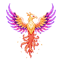
Формы и резонансForms & ResonanceМагия Фантазма умеет менять сам облик: напарницы обращаются духами ради наставниц, проклятия оборачивают мышами и призраками, а огонь феникса перекраивает даже героиню.Phantasm magic can reshape form itself: companions dissolve into spirits for their mentors, curses turn girls into bats and ghosts, and phoenix fire remakes even the heroine.
🧚 Резонанс фамильяровFamiliar Resonance
Пока связанная легендарка в отряде, её фамильяр (R/SR) отдаёт собственную душу: обращается духом-стихией, перестаёт атаковать и теряет все свойства — но усиливает урон наставницы. Убери легендарку из отряда — и прислужница вернёт прежний облик.While her bonded legendary is fielded, the familiar (R/SR) gives up her own soul: she dissolves into an elemental spirit, stops attacking and loses all her traits — but empowers her mentor’s damage. Bench the legendary and the familiar takes her old form back.
| ФамильярFamiliar | ДухSpirit | НаставницаMentor | БонусBonus |
|---|---|---|---|
| Наяда ТильNaiad Til | Дух водыWater Spirit | Владычица Озера НимуэNimue, Lady of the Lake | ⚔ +30% |
| Искра ТэаSpark Thea | Дух огняFire Spirit | Драконица ИгнараIgnara the Dragoness | ⚔ +30% |
| Грозовая ЮкиStormshot Yuki | Дух грозыThunder Spirit | Громовая АэллаAella the Thunderous | ⚔ +30% |
| Ученица ВэлNovice Val | Дух тьмыDark Spirit | Владычица Бездны НоксNox, Sovereign of the Abyss | ⚔ +30% |
| Росток МэйSprout May | Дух росткаSprout Spirit | Хранительница ГайяGaia the Warden | ⚔ +30% |
| Светлячок НэлGlimmer Nell | Дух-светлячокFirefly Spirit | Заря АврораAurora the Dawn | ⚔ +20% |
| Послушница РоAcolyte Ro | Дух-светлячокFirefly Spirit | Заря АврораAurora the Dawn | ⚔ +20% |
У Авроры два светлячка — Нэл и Ро; их сияние складывается до +40%.Aurora keeps two fireflies — Nell and Ro; their glow stacks up to +40%.
🌙 Проклятия и обращенияCurses & Transformations
🐦🔥 Огонь фениксаPhoenix Fire
🪞 Гардероб героиниThe Heroine’s Wardrobe
В Салоне Руники героиня примеряет облики — каждый открывается своим путём и меняет её вид в бою и городе.In the Rune Salon the heroine tries on looks — each unlocked its own way, changing her appearance in battle and town.
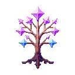
Древо перковPerk TreeОчки древа падают только с боссов: каждый мини-босс и владыка врат (плюс шанс бонусного очка). Кейстоуны (💠) — билдообразующие узлы с особыми правилами. Всего узлов: 105.Perk points drop from bosses only: every mini-boss and every gate lord (plus a bonus-point chance). Keystones (💠) are build-defining nodes with special rules. Total nodes: 105.
🌟 Призвание — сердце древа🌟 The Calling — Heart of the Tree 3
В самом центре древа сидит не перк, а Призвание — путь героини. Пока он не выбран, центр пуст: нажми на него и возьми одно из трёх. Призвание бесплатное, оно замещает собой «Искру» и становится сердцем древа со своим именем и знаком. Ветки при этом остаются открыты ВСЕ — призвание задаёт уклон, а не запирает дорогу. Передумала? Долгое нажатие на центр меняет путь за 60 🔮 (короткое просто покажет описание — случайно потратить фильсы нельзя).At the very centre of the tree sits not a perk but a Calling — the heroine's path. Until you pick one the centre stands empty: tap it and choose one of three. A Calling is free, it replaces the old “Spark” and becomes the heart of the tree with its own name and sign. Every branch stays open regardless — a Calling sets a leaning, not a cage. Changed your mind? A long press on the centre swaps your path for 60 🔮 (a short tap only shows the description, so you can't spend gems by accident).
⚔ Тап и крит⚔ Tap & Crit 28
⚑ Отряд и владыки⚑ Squad & Lords 19
💰 Экономика и удача💰 Economy & Luck 23
🔮 Магия и мана🔮 Magic & Mana 8
🛡 Защита и стойкость🛡 Defense & Resilience 3
🏠 Таверна и быт🏠 Tavern & Home 10
🎭 События мира🎭 World Events 10
🧭 Атлас🧭 Atlas 3
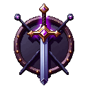
Механики бояCombat Mechanics🌪 СтихииElements
Шесть стихий по кольцу — каждая бьёт следующую ×1.30 и режется предыдущей ×0.85:
🔥 Огонь → ❄️ Лёд → 🌪️ Ветер → ⛰️ Земля → 🌌 Бездна → ✨ Свет → 🔥 Огонь
«Буря» считается Ветром. Стихию героине даёт только оружие со свойством «созвучие стихий» (T2+); напарницы бьют своей стихией всегда. Кристалл над врагом со стрелкой ▼/▲ подсказывает выгоду. Перк «Родство стихий» углубляет преимущество, кейстоун «Отражение стихий» убирает штраф ×0.85.
Six elements on a ring — each beats the next ×1.30 and is resisted by the previous ×0.85:
🔥 Fire → ❄️ Frost → 🌪️ Wind → ⛰️ Earth → 🌌 Void → ✨ Holy → 🔥 Fire
“Storm” counts as Wind. The heroine gains an element only from a weapon with the “elemental accord” property (T2+); companions always strike with their own element. The crystal above a foe with a ▼/▲ arrow shows the matchup. The “Elemental Kinship” perk deepens the advantage; the “Elemental Reflection” keystone removes the ×0.85 penalty.
🎯 Криты и промахиCrits & Misses
Шанс крита начинается с 0% — его собирают перками, вещами и вехами. База множителя ×1.15; суммарный крит-множитель свыше +3 учитывается слабее — с силой ×0.4 (софткап). Базовый промах — 35%: его выкупают точностью (перки/вещи/вехи уровня). Напарницы промахиваются со своим фиксированным шансом 15% и не критуют вовсе без перка «Меткий строй».
Crit chance starts at 0% — it is built up with perks, gear and milestones. The base multiplier is ×1.15; total crit multiplier past +3 counts at ×0.4 strength (soft cap). Base miss chance is 35%, bought down with accuracy (perks/gear/level milestones). Companions miss at their own flat 15% and cannot crit at all without the “Keen Formation” perk.
⚖ Кап урона за ударDamage cap per hit
Ни один удар не сносит врага целиком: за одно попадание уходит не больше половины его здоровья. Правило общее — и для нажатий героини, и для напарниц, и для заклинаний, — поэтому даже вдесятеро более сильный игрок бьёт рядового врага минимум дважды. У владык порог жёстче (15% за удар, у заклинаний-нюков свои лимиты) — см. «Боссы и гейты».
Исключение одно: покорённые тиры Морского Атласа. Уплыл на тир ниже своего лучшего минус один — ограничение снимается вместе с мягким сжатием силы, и весь урон проходит целиком: старые воды выкашиваются с одного удара.
No single blow wipes a foe out: one hit removes at most half of its health. The rule covers everything — the heroine’s taps, her companions and her spells — so even a vastly overpowered player needs at least two hits on ordinary trash. Lords are capped harder (15% per hit, with separate limits for nuke spells) — see “Bosses & Gates”.
There is one exception: conquered tiers of the Naval Atlas. Sail a tier below your best minus one and the cap lifts together with the soft power compression — your full damage lands and old waters die in a single strike.
😮💨 УсталостьFatigue
Каждые 300 тапов в кампании и Атласе героиня устаёт на 1 стак (до 10): −4% урона тапа, −4% шанса крита, +2% промаха за стак. Побочные режимы не утомляют. Сброс — «Отдохнуть» у очага таверны; перк «Второе дыхание» держит усталость не выше 5.
Every 300 taps in the campaign and the Atlas tires the heroine by 1 stack (up to 10): −4% tap damage, −4% crit chance, +2% miss per stack. Side modes don't tire her. Reset with “Rest” at the tavern hearth; the “Second Wind” perk caps fatigue at 5.
👑 Боссы и гейтыBosses & Gates
Мини-босс закрывает каждый этап, владыка врат — акт. На владыку даётся таймер (30с у мини-боссов на всех актах, 40с у врат; Владыка демонов 75с, финал 90с). Удар по владыке ограничен 15% его HP; у заклинаний-нюков свой кап — 20% за удар, и не больше 40% его HP за ВЕСЬ бой (магией владыку не добить — остальное несут нажатия, отряд и арсенал). Со 2-го акта растёт «стойкость владык» против голого тапа (−15% за акт, до −65% с 6-го; стихийное преимущество пробивает половину, отряд и заклинания бьют в полную силу). Ранние владыки учат «Стойке»: пережди парирование — бей в окно ×1.6.
Лесенка врат (иначе владыка поглощает 90% урона): отряд из 2 → 3 → 4 героинь (акты 1–3) → полный отряд + 1 SR (4–5) → 2 SR (6–7) → 3 SR (8–9) → 1 SSR (10–11) → 2 SSR (12–13) → 3 SSR (финал). Бесплатные легендарки: гарант на входе в акт 10 и за 50-й этаж Эха Бездны — врата никогда не требуют больше, чем можно получить без гачи.
A mini-boss closes every stage; a gate lord closes the act. Lords fight on a timer (30s for mini-bosses on every act, 40s at gates; Demon Lord 75s, finale 90s). A single hit on a lord is capped at 15% of his HP; nuke spells have their own cap — 20% per hit and no more than 40% of his HP across the WHOLE fight (magic alone cannot finish a lord — taps, the squad and the arsenal must carry the rest). From act 2 on, “lords' fortitude” hardens them against the bare tap (−15% per act, up to −65% from act 6; elemental advantage pierces half, the squad and spells hit at full force). Early lords teach the Parry Stance: wait out the guard, then strike the ×1.6 opening.
The gate ladder (otherwise the lord soaks 90% of damage): a squad of 2 → 3 → 4 heroines (acts 1–3) → full squad + 1 SR (4–5) → 2 SR (6–7) → 3 SR (8–9) → 1 SSR (10–11) → 2 SSR (12–13) → 3 SSR (finale). Free legendaries: a guaranteed grant entering act 10 and one from Echo floor 50 — gates never ask more than can be obtained without the gacha.
⛓ Плен владыкиLord’s Captivity
На входе в новый акт (или на остров Атласа) владыка этих земель с шансом 15% наносит удар первым — похищает случайную напарницу из всей коллекции. Пленница снимается со всех постов: отряд, таверна, питомник — и не встаёт в строй, пока владыка жив. Новичков с 1-2 напарницами владыки не трогают, и в плену держат лишь одну.Entering a new act (or an Atlas isle), the lord of these lands strikes first with a 15% chance — abducting a random companion from your whole collection. The captive is pulled from every post: squad, tavern, nursery — and cannot fight until the lord falls. Newcomers with 1-2 girls are spared, and only one girl is held at a time. Освободить её можно ровно одним способом — одолеть того самого владыку. Отступление и поражение не помогают. Долгое нажатие по карточке пленницы объясняет это прямо в игре.There is exactly one way to free her — defeat that very lord. Retreating or losing will not help. A long press on her card explains this in game.
В бою с владыкой врат пленница видна в его королевской клетке — она покачивается на цепи над ареной, за спиной хозяина. Клетку не разбить нажатием: единственный путь — одолеть самого владыку.In the gate lord’s battle the captive hangs in his royal cage — swaying on a chain above the arena, behind her captor. The cage cannot be tapped open: the only way is to fell the lord himself.
Плен переживает перезапуск игры; перерождение рвёт любые цепи.Captivity survives a restart; a rebirth breaks any chains.
🌫 Ауры враговFoe Auras
Часть врагов носит ауру — модификатор боя. Приглушить ауры помогают постройки Руники: каждое здание владыки ослабляет «свою» ауру вполсилы.Some foes carry an aura — a combat modifier. Runika lord buildings each dampen “their” aura to half strength.
🎭 Особые встречиSpecial Encounters
МагияMagic
Четыре ячейки заклинаний открываются тренировкой тапа: уровни 50 / 100 / 150 / 200. Мана сама не течёт — её дают реген-источники (перки, вещи, Жрица Аура), крит-возврат и синие пучки с врагов.Four spell slots unlock through tap training: levels 50 / 100 / 150 / 200. Mana doesn't regen on its own — it comes from regen sources (perks, gear, Priestess Aura), crit refunds and blue motes from foes.
Стихии и заклинания: стихийное колесо теперь НЕМНОГО усиливает и заклинания — преимущество/сопротивление действуют на них вполовину от удара (×1.15 вместо ×1.30, ×0.925 вместо ×0.85). Перк «Родство стихий» тоже вполовину. Звездопад (чистые % от HP) стихии не касаются.Elements & spells: the elemental wheel now slightly boosts spells too — advantage/resist apply at half the tap value (×1.15 instead of ×1.30, ×0.925 instead of ×0.85). The Elemental Kinship perk also counts at half. Starfall (pure % of HP) is unaffected by elements.
Базовые заклинанияBase Spells
Фирменные заклинания легендарокLegendary Signature Spells даются вместе с героинейgranted with the heroine
БестиарийBestiary
Полный музей нечисти Фантазма — 262 обитателей: 174 рядовых, 55 элит и 33 владык. В игре запись открывается САМОЙ ВСТРЕЧЕЙ — тварь достаточно увидеть на арене, добивать не обязательно: постройка «Бестиарий» в Рунике заведёт кодекс, каждая новая тварь приносит 10 фильсов. Здесь же — весь зверинец без секретов.The complete monster museum of the Phantasm — 262 denizens: 174 regulars, 55 elites and 33 lords. In game an entry unlocks on the ENCOUNTER itself — seeing the beast on the arena is enough, no kill required: the Bestiary building in Runika opens the codex, and every new beast pays 10 fils. Here the whole menagerie hides nothing.
🕷 Настройка «Без насекомых» (Настройки игры): убирает жуков, пауков и скорпионов из рядовых врагов и из мини-боссов — богомолы и владыки врат остаются. Пока галочка стоит, эти записи в кодексе не откроются: список не укорачивается, так что 100% бестиария придётся добивать с выключенной настройкой.🕷 The “No insects” setting (game Settings) removes beetles, spiders and scorpions from regular foes and from mini-bosses — mantises and gate lords stay. While it is on, those codex entries stay locked: the list is never shortened, so 100% completion requires turning the setting off.
Акт 1 · Изумрудная роща (и отражения в Акте 9 — Изнанке Сада)Act 1 · Emerald Grove (mirrored in Act 9 — the Underside) 12
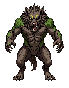
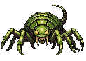
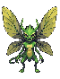
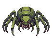
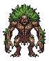
Акт 2 · Стылые пикиAct 2 · Frozen Peaks 13
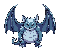
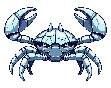
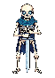
Акт 3 · Пепельная кальдераAct 3 · Ashen Caldera 10
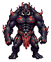
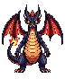
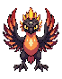
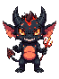
Акт 4 · Сумрачный лесAct 4 · Gloomwood 12
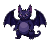
Акт 5 · Песчаное мореAct 5 · Sand Sea 12
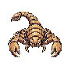
Акт 6 · БезднаAct 6 · The Abyss 12
Акт 7 · Звёздная пустошьAct 7 · Astral Waste 12
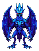
Акт 8 · Сад ВечностиAct 8 · Garden of Eternity 11
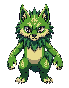
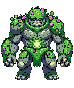
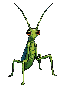
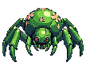
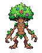
Акт 9 · Изнанка СадаAct 9 · Underside of the Garden 12
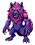
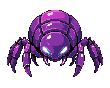
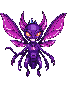
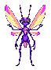
Акт 10 · Стеклянная БезднаAct 10 · Glass Abyss 12
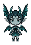
Акт 11 · Пепел ЗвёздAct 11 · Ash of Stars 12
Акт 12 · Нити МирозданияAct 12 · Threads of Creation 12
Акт 13 · Престол ЗабвенияAct 13 · Throne of Oblivion 12
Акт 14 · Театр ИстинногоAct 14 · Theatre of the True One 12
👑 Мини-владыки восьми земельElites of the Eight Realms 45
Каждая земля растит пять пород элиты — с короной, аурой и злым нравом.Each realm breeds five strains of elite — crowned, aura-clad and mean.
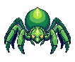
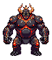
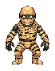
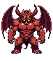
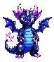
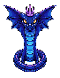
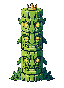
😈 Элита Царства МанипулятораElites of the Manipulator’s Realm 5
🌊 Глубины АтласаThe Atlas Deep 13
Фауна островов под влиянием Повелителя Глубин: рядовые твари пучины и её элита.The fauna of isles under the Overlord’s influence: trench regulars and their elite.
☠ ВладыкиLords 33
Владыки врат четырнадцати актов, хозяева подземелий и порождения Глубин.Gate lords of the fourteen acts, dungeon masters and spawn of the Deep.
владыка врат · акт 1gate lord · act 1
владыка врат · акт 2gate lord · act 2
владыка врат · акт 3gate lord · act 3
владыка врат · акт 4gate lord · act 4
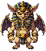
владыка врат · акт 5gate lord · act 5
владыка врат · акт 6gate lord · act 6
владыка врат · акт 7gate lord · act 7
владыка врат · акт 8 (в повторах акта)gate lord · act 8 (in act reruns)
владыка врат · акт 9gate lord · act 9
владыка врат · акт 10gate lord · act 10
владыка врат · акт 11gate lord · act 11
владыка врат · акт 12gate lord · act 12
владыка врат · акт 13gate lord · act 13
владыка врат · акт 14gate lord · act 14
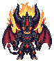
врата Акта 8gate of Act 8
владыка подземелья · акт 1dungeon lord · act 1
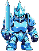
владыка подземелья · акт 2dungeon lord · act 2
владыка подземелья · акт 3dungeon lord · act 3
владыка подземелья · акт 4dungeon lord · act 4
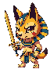
владыка подземелья · акт 5dungeon lord · act 5
владыка подземелья · акт 6dungeon lord · act 6
владыка подземелья · акт 7dungeon lord · act 7
владыка подземелья · акт 8dungeon lord · act 8
владыка подземелья · акт 9dungeon lord · act 9
владыка подземелья · акт 10dungeon lord · act 10
владыка подземелья · акт 11dungeon lord · act 11
владыка подземелья · акт 12dungeon lord · act 12
владыка подземелья · акт 13dungeon lord · act 13
владыка подземелья · акт 14dungeon lord · act 14
колосс АтласаAtlas colossus
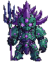
герольд ГлубинHerald of the Deep
герольд ГлубинHerald of the Deep
герольд ГлубинHerald of the Deep
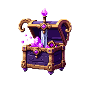
Предметы и крафтItems & CraftingЭкипировка падает только с боссов (база 5%, зона и удача поднимают до 10%) — и падает неопознанной: «реликвия молчит». Опознание в Кузнице выковывает свойства: их число задаёт редкость, а силу — тир, зависящий от акта добычи (акты 1-3 → T4, акты 4-8 → T3, акты 9-12 → T2, акты 13-14 → T1; ±1 тир с шансом 20/20, то есть ожидаемый выпадает в 60% случаев). Удача лута двигает в основном КАЧЕСТВО дропа.Gear drops from bosses only (5% base; zones and luck push it to 10%) — and it drops unidentified: “the relic is silent”. Identifying it at the Forge shapes its properties: rarity sets how many, and the tier — set by the act it dropped in — sets how strong (acts 1-3 → T4, acts 4-8 → T3, acts 9-12 → T2, acts 13-14 → T1; ±1 tier at 20/20 odds, so the expected tier lands 60% of the time). Loot luck mostly raises drop QUALITY.
РедкостиRarities
Тиры свойствProperty Tiers
Тир базы предмета раскладывается на свойства «даунгрейд-роллами»: T1-база даёт T1/T2/T3 (25/50/25), T2 → T2/T3/T4 и т.д. Плюс ~12% на «шальное» свойство T4 на любой базе — а тусклые процентные T4-свойства в 30% случаев выпадают в минус (риск/награда). Свойства T2/T1 имеют шанс оказаться уникальными (18% / 32%, не больше одной уникалки на предмет).
An item's base tier resolves into properties via “downgrade rolls”: a T1 base yields T1/T2/T3 (25/50/25), T2 → T2/T3/T4 and so on. Plus a ~12% chance of a “stray” T4 property on any base — and faint percent T4 properties roll negative 30% of the time (risk/reward). T2/T1 properties may turn out unique (18% / 32%, at most one unique per item).
Базовые свойстваBase Properties 24 ядра × 4 тира24 cores × 4 tiers
Уникальные свойстваUnique Properties только T2/T1T2/T1 only
Свойства ПовелителяOverlord Properties Свиток Повелителя / его влияниеOverlord's Scroll / his influence
Реликвии подземелийDungeon Relics розовые уникалки, по одной на данжpink uniques, one per dungeon
Свитки КузницыForge Scrolls
 Свиток РавновесияScroll of BalanceВыравнивает слабые свойства реликвии до её собственного тира.Lifts sub-tier properties up to the relic's own tier.с боссов 7% · с треша 5%bosses 7% · trash 5% Свиток ПорядкаScroll of OrderЗаново перековывает все свойства реликвии.Re-forges all of the relic's properties.с боссов 2.1% · с треша 1.4%bosses 2.1% · trash 1.4% Свиток ВосприятияScroll of PerceptionПерековывает свойства, стремясь дать только свойства собственного тира.Re-forges toward properties of the relic's own tier only.с боссов 5% · с треша 3%bosses 5% · trash 3% Свиток ВозвышенияScroll of AscensionВозвышает редкость реликвии и наделяет новыми свойствами.Raises the relic's rarity and grants new properties.с боссов 1%bosses 1% Свиток ОткровенияScroll of RevelationСтирает одно случайное свойство реликвии.Erases one random property.с боссов 8% · с треша 5%bosses 8% · trash 5% Свиток ДобавленияScroll of AugmentationДобавляет одно свойство, если редкость реликвии это позволяет.Adds one property if the rarity allows.с боссов 5% · с треша 3%bosses 5% · trash 3% Свиток ПовелителяScroll of the OverlordЗаменяет одно предвечное свойство свойством Повелителя.Replaces one eternal property with an Overlord's.только с Повелителя ГлубинThe Overlord of the Deep only
Свиток РавновесияScroll of BalanceВыравнивает слабые свойства реликвии до её собственного тира.Lifts sub-tier properties up to the relic's own tier.с боссов 7% · с треша 5%bosses 7% · trash 5% Свиток ПорядкаScroll of OrderЗаново перековывает все свойства реликвии.Re-forges all of the relic's properties.с боссов 2.1% · с треша 1.4%bosses 2.1% · trash 1.4% Свиток ВосприятияScroll of PerceptionПерековывает свойства, стремясь дать только свойства собственного тира.Re-forges toward properties of the relic's own tier only.с боссов 5% · с треша 3%bosses 5% · trash 3% Свиток ВозвышенияScroll of AscensionВозвышает редкость реликвии и наделяет новыми свойствами.Raises the relic's rarity and grants new properties.с боссов 1%bosses 1% Свиток ОткровенияScroll of RevelationСтирает одно случайное свойство реликвии.Erases one random property.с боссов 8% · с треша 5%bosses 8% · trash 5% Свиток ДобавленияScroll of AugmentationДобавляет одно свойство, если редкость реликвии это позволяет.Adds one property if the rarity allows.с боссов 5% · с треша 3%bosses 5% · trash 3% Свиток ПовелителяScroll of the OverlordЗаменяет одно предвечное свойство свойством Повелителя.Replaces one eternal property with an Overlord's.только с Повелителя ГлубинThe Overlord of the Deep onlyПечатиSeals шанс-ролл на упавших вещахa chance roll on dropped gear
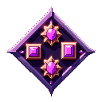
СетыSets2 части сета дают бонус b2, полный комплект из 3 — ещё и b3. Обычные сеты роллятся на любом луте; легендарные — по одному на SSR-героиню — начинают падать, пока она в коллекции героини. Регалии Шанателлы не падают вовсе — только с её проклятия (5% с любого врага, пока Нелюбимая Ведьма в отряде).2 set pieces grant the b2 bonus; the full 3 add b3 on top. Common sets roll on any loot; legendary ones — one per SSR heroine — start dropping while the heroine owns her. Shantelle's Regalia never drop normally — only through her curse (5% off any foe while the Unloved Witch is in the squad).
Обычные сетыCommon Sets
3 части3 pieces: +1.2× множитель крита · +6% весь урон+1.2× crit multiplier · +6% all damage
3 части3 pieces: +30% сопр. напастям · +10% весь урон+30% affliction resist · +10% all damage
3 части3 pieces: +18% урон тапа · +5% шанс крита+18% tap damage · +5% crit chance
3 части3 pieces: +35% удача лута+35% loot luck
3 части3 pieces: +18% урон отряда · +6% весь урон+18% squad damage · +6% all damage
3 части3 pieces: +30% удача лута+30% loot luck
3 части3 pieces: +30% сопр. лечению врага · +12% урон отряда+30% foe-heal resist · +12% squad damage
3 части3 pieces: +8% шанс крита · +10% урон тапа+8% crit chance · +10% tap damage
3 части3 pieces: +25% урон отряда · режим Командира+25% squad damage · Commander mode
Легендарные сетыLegendary Sets
3 части3 pieces: +45% весь урон · +2.5× множитель крита · +35% урон отряда · +35% урон тапа+45% all damage · +2.5× crit multiplier · +35% squad damage · +35% tap damageпадает, пока в коллекции Шанателлаdrops while the heroine owns Shantelle
3 части3 pieces: +100% точность · +20% весь урон+100% accuracy · +20% all damageпадает, пока в коллекции Святая Серафинаdrops while the heroine owns Saint Seraphina
3 части3 pieces: +100% шанс крита · +25% урон тапа+100% crit chance · +25% tap damageпадает, пока в коллекции Громовая Аэллаdrops while the heroine owns Thunder Aella
3 части3 pieces: +4.5× множитель крита · +15% весь урон+4.5× crit multiplier · +15% all damageпадает, пока в коллекции Драконица Игнараdrops while the heroine owns Dragoness Ignara
3 части3 pieces: +20% шанс двойного удара · +35% урон тапа+20% double-strike chance · +35% tap damageпадает, пока в коллекции Клинок Луны Цубакиdrops while the heroine owns Moonblade Tsubaki
3 части3 pieces: +9% порог казни · +18% весь урон+9% execute threshold · +18% all damageпадает, пока в коллекции Владычица Бездны Ноксdrops while the heroine owns Abyss Lady Nox
3 части3 pieces: +25% урон отряда · +20% весь урон+25% squad damage · +20% all damageпадает, пока в коллекции Снежная Императрица Лисаннаdrops while the heroine owns Snow Empress Lisanna
3 части3 pieces: +30% весь урон · +20% удача лута · +40% сопр. напастям+30% all damage · +20% loot luck · +40% affliction resistпадает, пока в коллекции Хранительница Гайяdrops while the heroine owns Guardian Gaia
3 части3 pieces: +35% урон тапа · +35% удача лута+35% tap damage · +35% loot luckпадает, пока в коллекции Суккуба Лилитdrops while the heroine owns Succubus Lilith
3 части3 pieces: +30% урон отряда · +35% удача лута · +10% весь урон+30% squad damage · +35% loot luck · +10% all damageпадает, пока в коллекции Владычица Озера Нимуэdrops while the heroine owns Lady of the Lake Nimue
3 части3 pieces: +25% весь урон · +1.8× множитель крита+25% all damage · +1.8× crit multiplierпадает, пока в коллекции Колдунья Морриганdrops while the heroine owns Witch Morrigan
3 части3 pieces: +25% весь урон · +2× множитель крита · +10% шанс крита+25% all damage · +2× crit multiplier · +10% crit chanceпадает, пока в коллекции Звёздная Дева Астреяdrops while the heroine owns Astral Maiden Astrea
3 части3 pieces: +50% опыт · +30% удача лута+50% XP · +30% loot luckпадает, пока в коллекции Хранительница Сада Верделияdrops while the heroine owns Garden Warden Verdelia
3 части3 pieces: +30% весь урон · +25% урон тапа · +20% урон отряда+30% all damage · +25% tap damage · +20% squad damageпадает, пока в коллекции Феникс Фейринdrops while the heroine owns Phoenix Feyrin
3 части3 pieces: +40% удача лута · +15% весь урон+40% loot luck · +15% all damageпадает, пока в коллекции Заря Аврораdrops while the heroine owns Aurora the Dawn
3 части3 pieces: +9% порог казни · +2.5× множитель крита+9% execute threshold · +2.5× crit multiplierпадает, пока в коллекции Жница Моранаdrops while the heroine owns Reaper Morana
Морской АтласNaval Atlas
Эндгейм после финала кампании. Боссы в море роняют карты актов (тир T1–T16 + аффиксы); карта вставляется в Штурманский стол — из моря поднимается остров, героиня плывёт и зачищает. В море держится максимум 15 островов — старейший тонет.The endgame past the campaign finale. Sea bosses drop act maps (tier T1–T16 + affixes); slot a map into the Navigator's Table — an island rises from the sea; sail out and clear it. The sea holds at most 15 isles — the oldest sinks.
Тир — ось сложности: каждый тир +28% HP врагов (T16 ≈ ×41) и +31% награды (T16 ≈ ×60). Тир-бэнды карт: 1–6 / 7–9 / 10–14 / 15–16 — Секстант Глубин поднимает тир только внутри бэнда, выше — ищи карту нового бэнда. Кап аффиксов растёт с тиром: 2 → 3 → 4 → 4. Карта всегда несёт хотя бы одно благо.
Карты T10+ могут нести влияние Повелителя Глубин: на таких островах падают предметы с его T1-свойствами. Каждые 5 зачисток всплывает его логово — колосс с ×3.5 HP и жирной наградой (осколок Фантазма). Финал такого острова держит именной герольд Глубин — Глашатай Глубин, Пожирательница Флотов или Тень Пучины. Острова ОДНОРАЗОВЫЕ: зачистила — и он отработан, переиграть его нельзя. Карты добываются только со свежих островов, а на самый крайний случай есть страховка от тупика.
Tier is the difficulty axis: each tier is +28% foe HP (T16 ≈ ×41) and +31% reward (T16 ≈ ×60). Map tier bands: 1–6 / 7–9 / 10–14 / 15–16 — the Sextant of the Deep raises tier only within a band; to go higher, find a map of the next band. The affix cap grows with tier: 2 → 3 → 4 → 4. A map always carries at least one boon.
T10+ maps may carry the The Overlord of the Deep's influence: such isles drop items bearing his T1 properties. Every 5 clears his lair surfaces — a colossus at ×3.5 HP with a fat prize (a Phantasm shard). The finale of such an isle is held by a named Herald of the Deep — the Herald of the Deep, the Fleet Devourer or the Trench Shade. Isles are ONE-SHOT: clear one and it is spent — there is no replaying it. Charts come only from fresh isles, with the dead-end lifeline as the last resort.
Опасности картMap Perils
Блага картMap Boons
🏝 Архипелаги и репутацияArchipelagos & Standing
Море поделено на четыре архипелага — по тир-бэндам карт: Мелководье знамений (T1-6), Хмурые течения (T7-9), Впадина (T10-14) и Пасть Повелителя (T15-16). Карта всплывает в том секторе, куда тянет её тир — выбирать нельзя, и потому положение на карте само показывает, как далеко ты зашла.
У каждого архипелага своё море на 8 островов (всего 32). Старый остров тонет ТОЛЬКО внутри своего сектора: свежая T3 больше не топит недойденный T16. Сектор виден на вкладке, даже если ещё закрыт — это цель, а не пустое место.
Репутация архипелага копится за зачистку его островов: 3 / 8 / 15 / 25 / 40 зачисток дают уровни 1-5. Уровень улучшает карты, падающие ИМЕННО В ЭТОМ секторе: +1 тир за каждые два уровня и +9% за уровень на лишнее благое свойство. Это главная петля эндгейма: фармишь сектор — он сам начинает тебя кормить, и прогресс остаётся за морем, даже когда острова тонут.
На вкладке сразу видно всё нужное: имя сектора, сколько островов занято из 8, сколько ещё не зачищено (красная точка) и уровень репутации звёздами.
The sea is split into four archipelagos by map tier band: Shallows of Omens (T1-6), Sullen Currents (T7-9), The Trench (T10-14) and Maw of the Overlord (T15-16). A chart surfaces in the sector its tier pulls it to — you cannot choose, so your position on the chart itself shows how far you have come.
Each archipelago holds its own sea of 8 isles (32 in total). An old isle sinks ONLY within its own sector: a fresh T3 no longer drowns the T16 you never finished. A sector is visible on its tab even while locked — a goal, not a blank.
Archipelago standing builds from clearing its isles: 3 / 8 / 15 / 25 / 40 clears grant levels 1-5. The level improves charts dropping IN THAT sector: +1 tier per two levels and +9% per level for an extra boon. This is the endgame loop: farm a sector and it starts feeding you — and the progress stays with the sea even as isles sink.
Each tab shows what matters at a glance: the sector name, isles held out of 8, how many are still uncleared (the red dot) and standing as stars.
🌑 Влияние Повелителя ГлубинThe Overlord's Sway
Как остров попадает под влияние. Три пути, и все — с тира 10:
• Метка на заготовке. Владыка острова роняет уже отмеченную карту с шансом ~22%, рядовой треш — ~8%. Такую метку не снять ничем: ни Штилем, ни перековкой.
• Печать Глубин — очень редкий секстант (~1% с владыки). Кладёт метку вручную на любую чистую карту T10+.
• Случай при всплытии — карта T10+ без метки всё ещё может уйти Повелителю сама (монетка 60%).
Печати Глубин. Когда такой остров всплывает, на него ложатся 1–2 особые печати СВЕРХ обычного капа аффиксов. Они не роллятся на обычных картах и не выдаются секстантами: 🐙 Хватка глубин (+120% HP), 🌊 Давление бездны (урон нажатия −35%), 🔇 Немой зов (откат заклинаний +60%), 🌀 Мёртвый прилив (таймер владыки −30%). Печати закреплены за сидом карты — один и тот же остров всегда несёт одни и те же.
Что взамен. Награда с затонувшего острова ×1.8 сверх множителя тира, падают предметы Повелителя, а зачистка двигает его заинтересованность (5 зачисток → всплывает логово). Свой бестиарий: удильщики, утопленницы, сирены, скаты и полипы вместо обычных мобов биома, а финал держит именной герольд. Такие острова носят свои, зловещие имена — Остров Бедствий, Погост Призраков, Утопленный Хор.
Видно заранее. На карте Атласа затонувший остров — свой спрайт в фиолетовом свечении; на экране земель карта тонет в бездне и несёт метку «Под влиянием Повелителя Глубин».
How an isle falls under the sway. Three routes, all from tier 10:
• A pre-marked chart. An isle lord drops an already-marked map at ~22%, ordinary trash at ~8%. That mark cannot be removed by anything — not Calm, not a re-roll.
• The Seal of the Deep — a very rare sextant (~1% from a lord). Applies the mark by hand to any unmarked T10+ map.
• Chance on surfacing — an unmarked T10+ map may still go to the Overlord on its own (a 60% coin flip).
Seals of the Deep. When such an isle rises, 1–2 special seals land on it ON TOP of the normal affix cap. They never roll on ordinary maps and no sextant grants them: 🐙 Deep Grip (+120% HP), 🌊 Abyssal Pressure (tap damage −35%), 🔇 Mute Call (spell cooldowns +60%), 🌀 Dead Tide (boss timer −30%). Seals are bound to the map's seed — the same isle always carries the same ones.
What you get back. Rewards from a drowned isle are ×1.8 on top of the tier multiplier, the Overlord's items drop, and each clear advances his interest (5 clears → his lair surfaces). Its own bestiary: anglers, drowned, sirens, rays and polyps instead of the biome's usual foes, with a named Herald holding the finale. Such isles carry their own ominous names — Isle of Woe, Ghost Barrow, Drowned Choir.
Visible in advance. On the Atlas chart a drowned isle has its own sprite in a violet glow; on the lands screen its map sinks into the abyss and carries the tag "Under the Deep Overlord's sway".
🌊 Море и картыThe Sea & Charts
Море держит 15 островов и вечную бухту. Вставляешь 16-ю карту — тонет самый старый остров вместе со всем его прогрессом (кроме того, где стоит корабль или где идёт бой); теперь при этом приходит уведомление, что именно ушло на дно.
Дикий улов. Дрейф тира прежний (±2 от карты-источника), но с картой T4+ есть ~14% шанс, что море отдаст заготовку СИЛЬНО ниже — хоть T1. Низкие тиры остаются доступны в эндгейме.
Логово Повелителя. Когда заинтересованность доходит до 5/5, владыка СЛЕДУЮЩЕГО затонувшего острова роняет «Приглашение Повелителя» в 100% случаев, после чего счётчик обнуляется и копится заново. Логово всплывает в архипелаге «Пасть Повелителя» — рабочие сектора оно не занимает. Приглашения не копятся стопкой: пока прошлое логово не пройдено, новое не выдаётся, но заслуженное не сгорает — влияние копится дальше и отдаст его сразу, как только место освободится. Эта карта особая: секстанты её не берут вообще, а свойства у неё всегда одни и те же — 🌑 Пасть Повелителя (+200% HP), 👁 Взор из бездны (урон нажатия −25%), 🦑 Хватка исполина (таймер владыки −20%) и 💠 Сокровищница Глубин (золота ×3).
Страховка от тупика. Если трюм пуст И плыть некуда (все острова зачищены), прибой сам выносит к бухте карту T1–6. Ситуация редкая, но встать намертво невозможно.
The sea holds 15 isles and the everlasting bay. Slot in a 16th chart and the oldest isle sinks with all of its progress (except the one your ship sits on or where a fight is running); a notice now tells you exactly what went under.
Wild catch. Tier drift is unchanged (±2 from the source map), but from a T4+ chart there is a ~14% chance the sea yields something FAR lower — down to T1. Low tiers stay reachable in the endgame.
The Overlord’s lair. Once interest reaches 5/5, the lord of the NEXT drowned isle yields the Overlord’s Invitation at 100%, after which the counter resets and builds again. The lair surfaces in the Maw of the Overlord archipelago, so it never occupies your working sectors. Invitations do not stack: while the previous lair stands uncleared no new one is granted, yet nothing earned is lost — interest keeps building and pays out the moment room frees up. That chart is special: sextants cannot touch it at all, and its properties are always the same — 🌑 Maw of the Overlord (+200% HP), 👁 Gaze from the Abyss (tap damage −25%), 🦑 Titan’s Grasp (boss timer −20%) and 💠 Hoard of the Deep (gold ×3).
Dead-end lifeline. If the hold is empty AND there is nowhere to sail (every isle cleared), the surf washes a T1–6 chart into the bay. It is a rare case, but a hard stall is impossible.
🧭 СекстантыSextants крафт карт, падают на островахmap crafting, drop on isles
 Секстант ХаосаSextant of ChaosЗаново перековывает ВСЕ аффиксы карты.Re-rolls ALL of a map's affixes.дроп: мини 6% · босс 10%drop: mini 6% · boss 10%
Секстант ХаосаSextant of ChaosЗаново перековывает ВСЕ аффиксы карты.Re-rolls ALL of a map's affixes.дроп: мини 6% · босс 10%drop: mini 6% · boss 10% Секстант ПриливаSextant of the TideДобавляет карте случайный аффикс (риск/награда).Adds a random affix (risk/reward).дроп: мини 5% · босс 8%drop: mini 5% · boss 8%
Секстант ПриливаSextant of the TideДобавляет карте случайный аффикс (риск/награда).Adds a random affix (risk/reward).дроп: мини 5% · босс 8%drop: mini 5% · boss 8% Секстант ШтиляSextant of CalmУбирает с карты одну ОПАСНОСТЬ (негативный аффикс).Removes one PERIL (negative affix).дроп: мини 4% · босс 6%drop: mini 4% · boss 6%
Секстант ШтиляSextant of CalmУбирает с карты одну ОПАСНОСТЬ (негативный аффикс).Removes one PERIL (negative affix).дроп: мини 4% · босс 6%drop: mini 4% · boss 6% Секстант ГлубинSextant of the DeepПовышает тир карты на 1 (сложнее, щедрее; +аффикс).Raises a map's tier by 1 (+affix).дроп: мини 1.5% · босс 3%drop: mini 1.5% · boss 3%
Секстант ГлубинSextant of the DeepПовышает тир карты на 1 (сложнее, щедрее; +аффикс).Raises a map's tier by 1 (+affix).дроп: мини 1.5% · босс 3%drop: mini 1.5% · boss 3%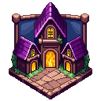
РуникаRunikaРуника — изометрический градострой и «панель управления» всей игрой: функции открываются не глубиной похода, а ПОСТРОЙКАМИ. Героиня строит Таверну — появляется вкладка таверны, Причал дирижабля — на карте открываются подземелья, и так далее. Территория растёт с каждым пройденным актом; на севере — стена, которую надо оборонять.Runika is an isometric city-builder and the game's control panel: features unlock through BUILDINGS, not journey depth. Build the Tavern and its tab appears; build the Airship Dock and dungeons open on the map, and so on. The plot grows with each act cleared; a wall to the north must be defended.
Стройка: тапни карточку внизу и выбери клетку — прицел, тапни ещё раз — строится (идёт время, можно ускорить фильсами): декор ставится мгновенно, главные/открывающие постройки ~1 минуту, крупные украшения-филлеры 30–60 минут; цена мгновенного ускорения растёт с длительностью (5 мин → 5, 30 мин → 30, 1 ч → 50, 2 ч → 70 фильсов). Особо крупные здания многофазны (⚒×N): фундамент → этажи → крыша. Долгий тап по зданию — перенести или убрать на склад (со склада ставится бесплатно; базовые постройки и домики только переносятся). Долгий тап по земле кладёт дорогу. Уникальные здания — лимит 1/1. Про цены: у первых пяти построек цена фиксированная (🪙100–200), а у остальных она записана как «N×ур.золота» — это уровневое золото, честная единица прогресса: среднее между ценой следующего уровня Тренировки и ценой следующего уровня напарниц отряда. Поэтому дом стоит тем дороже, чем сильнее сама героиня, а не «20 000 золотом» раз и навсегда. Перк «Смета» сбивает золотую цену (фильсовые постройки перками не дешевеют).
Building: tap a card below and pick a cell to aim, tap again to build (it takes time; rush with fils): decor is placed instantly, core/unlock buildings ~1 minute, large filler decorations 30–60 minutes; the instant-rush price grows with the duration (5 min → 5, 30 min → 30, 1 h → 50, 2 h → 70 fils). The largest buildings are multi-phase (⚒×N): foundation → floors → roof. Long-press a building to move it or send it to storage (free to re-place from storage; core buildings and homes can only be moved). Long-press the ground for a road. Unique buildings are capped 1/1. About prices: the first five buildings have a fixed price (🪙100–200); the rest are written as “N×level-gold” — level-gold is the game's honest unit of progress: the average of your next Training level cost and the next level cost of your squad. So a building costs more the stronger the heroine already is, rather than a flat “20,000 gold” forever. The Blueprint perk cuts the gold price (fil-priced buildings are never discounted by perks).
🏛 Главные постройкиCore Buildings открывают вкладки и режимыunlock tabs & modes
Строится БЕСПЛАТНО и всего за минуту — открывается после финала кампании. Без неё в Морской Атлас не выплыть.Built for FREE in just one minute — unlocked after the campaign finale. Without it there is no sailing the Naval Atlas.
🌾 ФермыFarms пассивное золото в «уровнях Тренировки»passive gold in “Training levels”
🏆 Постройки за актыAct Buildings после владык врат — трофеи и боевые баффыafter gate lords — trophies & combat buffs
🌸 ДекорDecor
🌸 Тематический декорThemed Decor по 5 украшений на каждый актfive ornaments per act
Кроме восьми общих украшений выше, у каждого акта есть свой набор из пяти: прошёл землю — можешь принести её частичку домой. Декор ставится мгновенно и без стройки, а со склада возвращается бесплатно. Цена почти у всех — в «уровневом золоте», поэтому украшать город выгоднее раньше, чем позже.Beyond the eight general ornaments above, every act has its own set of five: walk a land and you can bring a piece of it home. Decor is placed instantly, with no build time, and returns from storage for free. Almost every price is in “level-gold”, so decorating early costs less than decorating late.
Показать все 70 украшенийShow all 70 ornaments
| УкрашениеOrnament | Что этоWhat it is | ЦенаPrice | Размер и лимитSize & cap |
|---|---|---|---|
| 01 · Изумрудная рощаEmerald Grove | |||
| СкамейкаBench | Дубовая скамейка рощи.An oak grove bench. | 🪙1×ур.золотаlevel-gold | 1×1 · до 12 шт.up to 12 |
| КлумбаFlowerbed | Кольцо камней с полевыми цветами.A stone ring of wildflowers. | 🪙1×ур.золотаlevel-gold | 1×1 · до 16 шт.up to 16 |
| Изумрудный кустEmerald Bush | Куст рощи со светляками.A grove bush with fireflies. | 🪙1×ур.золотаlevel-gold | 1×1 · до 20 шт.up to 20 |
| Замшелый валунMossy Boulder | Камень в мягком мху.A stone in soft moss. | 🪙1×ур.золотаlevel-gold | 1×1 · до 12 шт.up to 12 |
| Птичья купельBird Bath | Каменная чаша для пташек рощи.A stone basin for grove birds. | 🪙1×ур.золотаlevel-gold | 1×1 · до 8 шт.up to 8 |
| 02 · Стылые пикиFrozen Peaks | |||
| Льдинка ПиковPeak Shard | Вечный лёд Стылых пиков.Everice of the Frigid Peaks. | 🪙1×ур.золотаlevel-gold | 1×1 · до 10 шт.up to 10 |
| Снежная ельSnow Fir | Ель в снежной шубе.A fir in a snowy coat. | 🪙1×ур.золотаlevel-gold | 1×1 · до 14 шт.up to 14 |
| Ледяное зеркальцеFrozen Mirror | Замёрзший гладкий прудик.A frozen mirror-smooth pond. | 🪙2×ур.золотаlevel-gold | 2×2 · до 5 шт.up to 5 |
| СнеговикSnowman | Весёлый страж морозных пиков.A jolly frost-peak warden. | 🪙1×ур.золотаlevel-gold | 1×1 · до 8 шт.up to 8 |
| Ледяная аркаIce Arch | Арка из вечного льда.An arch of everice. | 🪙2×ур.золотаlevel-gold | 1×1 · до 4 шт.up to 4 |
| 03 · Пепельная кальдераAshen Caldera | |||
| КостровищеCampfire | Живой огонь кальдеры.Living caldera fire. | 🪙2×ур.золотаlevel-gold | 1×1 · до 8 шт.up to 8 |
| Обсидиановый клыкObsidian Fang | Чёрное стекло с тлеющими жилами.Black glass with smouldering veins. | 🪙2×ур.золотаlevel-gold | 1×1 · до 8 шт.up to 8 |
| Пепельное знамяAsh Banner | Опалённый стяг похода в Кальдеру.A scorched Caldera banner. | 🪙2×ур.золотаlevel-gold | 1×1 · до 8 шт.up to 8 |
| Лавовая лужицаLava Pool | Тёплое озерцо расплавленного камня.A warm pool of molten rock. | 🪙2×ур.золотаlevel-gold | 2×2 · до 4 шт.up to 4 |
| Жаровня бесовImp Brazier | Чаша огня на когтистой ноге.A fire bowl on a clawed leg. | 🪙2×ур.золотаlevel-gold | 1×1 · до 8 шт.up to 8 |
| 04 · Сумрачный лесGloomwood | |||
| Гриб-светлякGlowshroom | Светящийся гриб Сумрачного леса.A glowing Dusk Forest mushroom. | 🪙2×ур.золотаlevel-gold | 1×1 · до 12 шт.up to 12 |
| Теневой тотемShadow Totem | Резной страж чащи с рунами.A carved thicket warden. | 🪙2×ур.золотаlevel-gold | 1×1 · до 6 шт.up to 6 |
| Куст сумрачных ягодDuskberry Bush | Тёмные ягоды, светящиеся в сумерках.Dark berries that glow at dusk. | 🪙2×ур.золотаlevel-gold | 1×1 · до 14 шт.up to 14 |
| Лиловый фонарьViolet Lantern | Фонарь на теневом масле.A lantern on shadow oil. | 🪙2×ур.золотаlevel-gold | 1×1 · до 10 шт.up to 10 |
| Паучий стягWeb Banner | Знамя, сотканное пауками чащи.A banner spun by thicket spiders. | 🪙2×ур.золотаlevel-gold | 1×1 · до 8 шт.up to 8 |
| 05 · Песчаное мореSand Sea | |||
| КактусCactus | Колючий житель дюн с алым цветком.A prickly dune dweller with a scarlet bloom. | 🪙2×ур.золотаlevel-gold | 1×1 · до 10 шт.up to 10 |
| Песчаный валунDune Boulder | Выветренный камень древних дюн.A wind-worn dune stone. | 🪙2×ур.золотаlevel-gold | 1×1 · до 10 шт.up to 10 |
| Лампа миражейMirage Lamp | Золотая лампа в знойном мареве.A golden lamp in heat haze. | 🪙3×ур.золотаlevel-gold | 1×1 · до 8 шт.up to 8 |
| Обломок стражаWarden Shard | Осколок древнего каменного стража.A shard of an ancient stone warden. | 🪙3×ур.золотаlevel-gold | 1×1 · до 6 шт.up to 6 |
| Пальма оазисаOasis Palm | Зелёное чудо среди песков.A green miracle amid the sands. | 🪙3×ур.золотаlevel-gold | 1×1 · до 10 шт.up to 10 |
| 06 · БезднаThe Abyss | |||
| Бездновый цветокAbyss Bloom | Цветок, распустившийся во тьме.A flower that bloomed in the dark. | 🪙3×ур.золотаlevel-gold | 1×1 · до 10 шт.up to 10 |
| Око бездныAbyss Eye | Багровое озерцо смотрит в ответ.A crimson pool stares back. | 🪙3×ур.золотаlevel-gold | 1×1 · до 4 шт.up to 4 |
| Клык древнего злаElder Fang | Кристалл, тёмный изнутри.A crystal dark within. | 🪙3×ур.золотаlevel-gold | 1×1 · до 6 шт.up to 6 |
| Алтарь тенейShadow Altar | Малый алтарь культа Бездны.A lesser Abyss cult altar. | 🪙3×ур.золотаlevel-gold | 1×1 · до 4 шт.up to 4 |
| Знамя бездныAbyss Banner | Багровый стяг падших глубин.A crimson banner of fallen depths. | 🪙3×ур.золотаlevel-gold | 1×1 · до 8 шт.up to 8 |
| 07 · Звёздная пустошьAstral Waste | |||
| Звёздный осколокStar Shard | Осколок умершей звезды, ещё тёплый.A dead star's shard, still warm. | 🪙3×ур.золотаlevel-gold | 1×1 · до 8 шт.up to 8 |
| Лунный каменьMoonstone | Стела из холодного лунного камня.A stele of cold moonstone. | 🪙3×ур.золотаlevel-gold | 1×1 · до 6 шт.up to 6 |
| Звёздный фонарьStar Lantern | В стекле дремлет пойманная звезда.A caught star sleeps in glass. | 🪙3×ур.золотаlevel-gold | 1×1 · до 10 шт.up to 10 |
| МетеоритMeteorite | Гость из пустоши, ещё дымится.A wasteland guest, still smoking. | 🪙3×ур.золотаlevel-gold | 1×1 · до 8 шт.up to 8 |
| Столп созвездийConstellation Post | Стяг с картой мёртвых созвездий.A banner charting dead constellations. | 🪙3×ур.золотаlevel-gold | 1×1 · до 8 шт.up to 8 |
| 08 · Сад ВечностиGarden of Eternity | |||
| ВечноцветEverbloom | Клумба Сада, цветущая вечно.A Garden bed that blooms forever. | 🪙3×ур.золотаlevel-gold | 1×1 · до 12 шт.up to 12 |
| Древо-малышSapling of Eternity | Росток великого Древа Сада.A sprout of the great Garden Tree. | 🪙3×ур.золотаlevel-gold | 1×1 · до 8 шт.up to 8 |
| Родник вечностиEternal Spring | Вода, в которой не тонет время.Water where time cannot drown. | 🪙4×ур.золотаlevel-gold | 2×2 · до 4 шт.up to 4 |
| Изумрудная аркаEmerald Arch | Врата в глубину Сада.A gate into the Garden's depth. | 🪙4×ур.золотаlevel-gold | 1×1 · до 4 шт.up to 4 |
| Хранитель садаGarden Keeper | Статуя девы с лейкой.A maiden statue with a watering can. | 🪙4×ур.золотаlevel-gold | 1×1 · до 6 шт.up to 6 |
| 09 · Изнанка СадаUnderside of the Garden | |||
| Нить марионеткиPuppet Thread | Порванная нить с изнанки мира.A torn thread from the world's seam. | 🪙4×ур.золотаlevel-gold | 1×1 · до 8 шт.up to 8 |
| Сорванная маскаFallen Mask | Маска, снятая с декораций мира.A mask torn from the world's stage. | 🪙4×ур.золотаlevel-gold | 1×1 · до 6 шт.up to 6 |
| КулисаSide Curtain | Обрывок занавеса Изнанки.A scrap of the Seam's curtain. | 🪙4×ур.золотаlevel-gold | 1×1 · до 6 шт.up to 6 |
| Изнаночный кустSeam Bush | Куст, сшитый из лоскутов листвы.A bush stitched from leaf patches. | 🪙4×ур.золотаlevel-gold | 1×1 · до 12 шт.up to 12 |
| Лампа-обманкаTrick Lamp | Светит туда, куда не смотришь.Shines where no one is looking. | 🪙4×ур.золотаlevel-gold | 1×1 · до 8 шт.up to 8 |
| 10 · Стеклянная БезднаGlass Abyss | |||
| Зеркальный осколокMirror Shard | Осколок Стеклянной Бездны.A shard of the Glass Abyss. | 🪙4×ур.золотаlevel-gold | 1×1 · до 8 шт.up to 8 |
| Стеклянный прудGlass Pond | Вода, застывшая в стекло.Water frozen into glass. | 🪙4×ур.золотаlevel-gold | 2×2 · до 4 шт.up to 4 |
| Хрустальная аркаCrystal Arch | Арка, звенящая на ветру.An arch that chimes in the wind. | 🪙4×ур.золотаlevel-gold | 1×1 · до 4 шт.up to 4 |
| ПризмаPrism | Столп, дробящий свет на радуги.A pillar splitting light into rainbows. | 🪙4×ур.золотаlevel-gold | 1×1 · до 6 шт.up to 6 |
| Стеклянный стражGlass Warden | Прозрачная дева с клинком света.A translucent maiden with a light blade. | 🪙4×ур.золотаlevel-gold | 1×1 · до 6 шт.up to 6 |
| 11 · Пепел ЗвёздAsh of Stars | |||
| Погасшая звездаDead Star | Сердце светила, остывшее навек.A star's heart, cooled forever. | 🪙4×ур.золотаlevel-gold | 1×1 · до 6 шт.up to 6 |
| Пепельный самородокAsh Nugget | Золото, рождённое в звёздном пепле.Gold born in stellar ash. | 🪙4×ур.золотаlevel-gold | 1×1 · до 10 шт.up to 10 |
| Реликварий светаLight Reliquary | Хранит последний луч светила.Keeps a star's last ray. | 🪙5×ур.золотаlevel-gold | 1×1 · до 4 шт.up to 4 |
| Уголёк светилаStar Ember | Тёплый уголёк погасшей звезды.A warm ember of a dead star. | 🪙4×ур.золотаlevel-gold | 1×1 · до 8 шт.up to 8 |
| Знамя звёздного пеплаStarfall Banner | Стяг похода по кладбищу светил.A banner of the starfield march. | 🪙4×ур.золотаlevel-gold | 1×1 · до 8 шт.up to 8 |
| 12 · Нити МирозданияThreads of Creation | |||
| Клубок нитейThread Ball | Клубок чужих судеб.A ball of others' fates. | 🪙5×ур.золотаlevel-gold | 1×1 · до 10 шт.up to 10 |
| Веретено судьбыFate Spindle | Прядёт нити мироздания.Spins the threads of creation. | 🪙5×ур.золотаlevel-gold | 1×1 · до 6 шт.up to 6 |
| Ткацкий стан сновDream Loom | Ткёт полотно из чужих снов.Weaves cloth from others' dreams. | 🪙5×ур.золотаlevel-gold | 1×1 · до 4 шт.up to 4 |
| Нить-фонарьThread Lantern | Светящаяся нить в стеклянной капле.A glowing thread in a glass drop. | 🪙5×ур.золотаlevel-gold | 1×1 · до 8 шт.up to 8 |
| Узел мирозданияWorld Knot | Кристалл, где сходятся все нити.A crystal where all threads meet. | 🪙5×ур.золотаlevel-gold | 1×1 · до 6 шт.up to 6 |
| 13 · Престол ЗабвенияThrone of Oblivion | |||
| Забытый тронForgotten Throne | Трон, чьего владыку стёрли.A throne whose lord was erased. | 🪙5×ур.золотаlevel-gold | 1×1 · до 4 шт.up to 4 |
| Стёртая стелаErased Stele | Имена на ней не задерживаются.Names refuse to stay on it. | 🪙5×ур.золотаlevel-gold | 1×1 · до 6 шт.up to 6 |
| Свеча памятиMemory Candle | Горит по тем, кого забыли.Burns for the forgotten. | 🪙5×ур.золотаlevel-gold | 1×1 · до 10 шт.up to 10 |
| Вуаль забвенияOblivion Veil | Полупрозрачный стяг Престола.A translucent Throne banner. | 🪙5×ур.золотаlevel-gold | 1×1 · до 8 шт.up to 8 |
| Осколок имениName Shard | Кристалл с получитаемой надписью.A crystal with a half-read name. | 🪙5×ур.золотаlevel-gold | 1×1 · до 6 шт.up to 6 |
| 14 · Театр ИстинногоTheatre of the True One | |||
| Маска ТеатраTheatre Mask | Улыбка и плач финальной сцены.The final stage's smile and cry. | 🪙5×ур.золотаlevel-gold | 1×1 · до 6 шт.up to 6 |
| Алый занавесScarlet Curtain | Кусок занавеса Театра Истинного.A piece of the True Theatre's curtain. | 🪙5×ур.золотаlevel-gold | 1×1 · до 4 шт.up to 4 |
| СофитSpotlight | Луч, что ищет главного героя.A beam seeking the protagonist. | 🪙5×ур.золотаlevel-gold | 1×1 · до 8 шт.up to 8 |
| Афиша финалаFinale Poster | «Сегодня и навсегда: ФИНАЛ».“Tonight and forever: THE FINALE”. | 🪙5×ур.золотаlevel-gold | 1×1 · до 8 шт.up to 8 |
| Роза МанипулятораManipulator's Rose | Алая роза с последнего поклона.A scarlet rose from the last bow. | 🪙5×ур.золотаlevel-gold | 1×1 · до 10 шт.up to 10 |
🏠 Домики легендарокLegendary Homes
Выбил SSR или выше — в каталоге появляется её личный домик. Пока он не построен, легендарка бьёт на 10% силы и серая в бою. И даже с домиком и сытая она берёт своё: содержание элитного отряда срезает 9% золота за каждую легендарку (мифик — 14%), голодная и бездомная — заметно больше. Построй домик и доставляй еду за золото — шкала над домом наполняется, и героиня в полной силе (еда тает ~3 часа активной игры). Обычные героини просто бродят по городу; легендарки держатся у своего домика. Утренняя мигрень 🤕 больше никого не запирает дома: заболевшая легендарка остаётся в отряде, просто весь день бьётся вполсилы (−50% урона, с перком «Тихий покой» — всего −25%). Значок 🤕 и пояснение видны прямо на карточке отряда.
Pull an SSR or higher and her personal home appears in the catalog. Until it's built she fights at 10% power and greys out in battle. Even fed and housed she costs you: an elite squad shaves 9% of your gold per legendary (14% for a mythic), and a hungry or homeless one takes far more. Build the home and deliver food for gold — the bar over the house fills and she's at full strength (food decays over ~3 hours of active play). Common heroines just wander the town; legendaries stay near their home. A morning migraine 🤕 no longer locks anyone indoors: the afflicted legendary stays in the squad and simply fights at half strength all day (−50% damage, or just −25% with the “Quiet Repose” perk). The 🤕 mark and its explanation sit right on the squad card.
🧱 Северная стена и осадыNorth Wall & Sieges
За северной стеной бродят монстры. Осада не стихает (после первого акта): волны монстров то и дело идут на приступ и грызут стену — тапай по ним, а гуляющие героини помогают отгонять. Если стена падёт — прорыв: монстры поджигают второстепенные здания, те временно теряют функции; туши пожары тапами и чини стену за золото. Основные (функциональные) постройки не горят.
Monsters roam beyond the north wall. The siege never rests (after act 1): waves keep assaulting and gnawing at the wall — tap them, and wandering heroines help drive them off. If the wall falls it's a breach: monsters set secondary buildings on fire and they lose function until the flames are tapped out and the wall repaired for gold. Core (functional) buildings don't burn.
⚔ ПодземельяDungeons 14, по одному на акт (нужен Причал дирижабля)14, one per act (needs the Airship Dock)
Одноразовые дуэли с уникальным владыкой. Бой замирает на 75%, 50% и 25% здоровья: поднимается щит и меняется аура. С 2026-07-22 у КАЖДОГО владыки подземелья своя именная механика — она указана в карточке. Награда — розовая реликвия с безаналоговым свойством.One-time duels against a unique lord. The fight locks at 75%, 50% and 25% health: a shield rises and the aura shifts. Since 2026-07-22 EVERY dungeon lord has his own signature mechanic — see each card. The prize is a pink relic with a property found nowhere else.
⚙ Механика: ⚙ Mechanic: Зарывается на 4 секунды. Из трёх бугров земли шевелится только его нора — ткни верную, и выкопаешь досрочно, отняв десятину здоровья.Burrows for 4 seconds. Only his own mound stirs among the three — dig the right one to pull him out early and tear off a tenth of his health.
⚙ Механика: ⚙ Mechanic: На каждом пороге запечатывает напарницу в глыбу льда. Десять ударов и пять секунд — не успела, и глыба становится ВЕЧНОЙ (её больше не разбить), напарница выбывает до конца боя. До трёх заморозок за бой.At every threshold he seals a companion in ice. Ten hits, five seconds — fail and the block turns PERMANENT (it can no longer be broken) and she is out for the rest of the fight. Up to three freezes per fight.
⚙ Механика: ⚙ Mechanic: Раскаляется на 4 секунды из каждых 8. Нажатие по раскалённому не проходит и ещё подпитывает его. Напарницы с оружием бьют как обычно.Goes white-hot for 4 seconds out of every 8. Taps on him do not land and feed him instead. Armed companions strike as usual.
⚙ Механика: ⚙ Mechanic: На 75/50/25% сама становится почти прозрачной и НЕУЯЗВИМОЙ, а рядом ставит две копии. Настоящую выдаёт тень под ногами, фальшивка полупрозрачна. Копию бьём 5 нажатий: разбил настоящую → Тень снова уязвима и бой идёт дальше; разбил фальшивку → Тень исцеляется полностью и накладывает на героиню проклятие.At 75/50/25% she turns nearly transparent and INVULNERABLE and raises two copies. The real one has a shadow at her feet; the decoy is see-through. Break a copy in 5 taps: break the real one → the Shade is vulnerable again and the fight goes on; break the decoy → the Shade fully heals and curses the heroine.
⚙ Механика: ⚙ Mechanic: Песочные часы утекают за 7 секунд. Досыпались — Царица вернёт себе 30% здоровья, и так весь бой. Пять нажатий переворачивают часы.Her hourglass runs out in 7 seconds. Let it empty and the Queen takes back 30% of her health, all fight long. Five taps turn it over.
⚙ Механика: ⚙ Mechanic: Каждые 5 секунд зажигает четыре звезды; они гаснут сами за 3 секунды. Сбей все — ничего не случится; за каждую несбитую при гашении владычица лечится на 20%.Every 5 seconds she lights four stars; they burn out on their own in 3 seconds. Break them all — nothing; for each one left when they fade she heals 20%.
⚙ Механика: ⚙ Mechanic: Каждые 7 секунд оплетает лозой случайную напарницу. Не собьёшь путы за 3 секунды — она обращается в зелёного элементаля до конца боя и каждые 5 секунд лечит владыку на 5%. Некого оплетать — механику пропускает.Every 7 seconds a vine binds a random companion. Fail to cut it within 3 seconds and she turns into a green elemental for the rest of the fight, healing him 5% every 5 seconds. No one left to bind — he skips it.
⚙ Механика: ⚙ Mechanic: На каждом пороге выставляет зеркало: пока стекло цело, ВЕСЬ урон уходит в никуда. Тридцать ударов — и оно падёт.At every threshold he raises a mirror: while the glass stands, ALL damage vanishes. Thirty hits will break it.
⚙ Механика: ⚙ Mechanic: Поднимает зеркальных двойников — по одному раз в 10 секунд, не больше четырёх. Каждый режет весь твой урон на треть, шесть ударов развеивают одного.Raises mirror doubles — one every 10 seconds, four at most. Each cuts all your damage by a third; six hits undo one.
⚙ Механика: ⚙ Mechanic: Три угля тлеют весь бой. Раскалившись, уголь каждые 5 секунд возвращает владыке 22% здоровья и выжигает 75 маны — пока не остудишь его одним нажатием.Three embers smoulder all fight long. Once white-hot, an ember heals him 22% and burns 75 mana every 5 seconds — until a single tap cools it.
⚙ Механика: ⚙ Mechanic: Тянет нити к трём напарницам: связанная бьёт вполсилы. Рвать нить невыгодно — за каждую порванную −15% твоего урона до конца боя; но и без единой нити на арене героиня получает проклятие. Новую нить Пряха тянет каждые 12 секунд.Spins threads to three companions: a bound one strikes at half strength. Severing is costly — each cut thread is −15% of your damage for the fight; yet with no thread on the field at all the heroine is cursed. She spins a new one every 12 seconds.
⚙ Механика: ⚙ Mechanic: Каждые 10 секунд стирает одно твоё заклинание — слот гаснет до конца боя. Владыка, наказывающий медлительность.Every 10 seconds he erases one of your spells — the slot stays dark for the fight. A lord who punishes slowness.
⚙ Механика: ⚙ Mechanic: Открывает бой во всю силу: проклятие на героиню (−60% нажатий) и ВЕСЬ отряд разом по клеткам. На SSSR не действует ничего.Opens at full force: a curse on the heroine (−60% taps) and the ENTIRE squad caged at once. Nothing of it touches an SSSR.
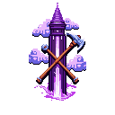
Прочие режимыOther Modes открываются постройкамиunlocked by buildingsРазвитиеProgression
🎖 Ветеранские знакиVeteran Marks
Каждый поверженный владыка врат оставляет героине ветеранский знак: все синие (R) и фиолетовые (SR) напарницы в коллекции навсегда получают +2.5% силы. За всю кампанию — 14 знаков, то есть +35%.
Знаки не действуют на легендарок: это рычаг ровно для бесплатного отряда. «Печать легенды» держит легендарок до 8-го акта, а дальше у обычных напарниц раньше не было ни одного источника роста — знаки закрывают этот провал.
Every gate lord you fell leaves a veteran mark: all blue (R) and purple (SR) companions in your collection permanently gain +2.5% power. Fourteen lords across the campaign — +35% in total.
Marks never touch legendaries: this lever exists for the free squad. The Legend Seal restrains legendaries until act 8, but ordinary companions had no growth source of their own at all — marks close that gap.
⏳ Таймеры владыкLord Timers
Мини-босс (50-й враг этапа): 30 с на ВСЕХ актах. Прежние 22 с с 5-го акта отменены: с ними мини умирал на 21-22-й секунде — «впритык», а не бой. Вызов держится его здоровьем, а не секундами: на честной прокачке он съедает 8-15 секунд собственного таймера, то есть примерно половину.
Владыка врат: 40 с. Владыка Демонов (этап 400): 75 с. Истинный Манипулятор (этап 700): 90 с.
Владыка одноразового подземелья: 50 с — за это время надо снести его здоровье и три фазовых щита по 10%.
Mini-boss (50th foe of a stage): 30s on EVERY act. The old 22s from act 5 is gone: with it the mini died on second 21-22 — a photo finish, not a fight. His challenge rests on his health, not on the clock: at an honest level he eats 8-15 seconds of his own timer, roughly half of it.
Gate lord: 40s. Demon Lord (stage 400): 75s. True Manipulator (stage 700): 90s.
One-time dungeon lord: 50s — enough time to break his health plus three phase shields of 10% each.
⚔ Вехи уровней напарницCompanion Level Milestones
Уровень напарницы даёт награды на вехах: 20 +30% своей силы · 50 её роль сильнее · 100 +30% · 200 +25% · 250 +20% · 300 +20% · 350 роль ещё сильнее · 420 +20% · 500 +60% · 700 +45% и +15% чистой силы · 900 роль · 1000 +100% и +25% чистой силы.
Вехи 250, 300 и 420 закрывают провал между 200-й и 350-й: раньше там было полторы сотни уровней вообще без наград. В кампании 250 берётся примерно к 6-му акту, 300 — к 7-му, 420 — к 9-му.
Companion levels pay out at milestones: 20 +30% own power · 50 her role deepens · 100 +30% · 200 +25% · 250 +20% · 300 +20% · 350 role deepens more · 420 +20% · 500 +60% · 700 +45% and +15% raw power · 900 role · 1000 +100% and +25% raw power.
Milestones 250, 300 and 420 close the gap between 200 and 350 — a hundred and fifty levels that used to pay nothing at all. In the campaign 250 arrives around act 6, 300 around act 7, 420 around act 9.
🎰 Призыв (гача)The Summon (gacha)
Базовый шанс SSR — 0.6%; с 55-й крутки без легендарки шанс растёт (+6% за крутку), на 68-й — гарант. Не выпала избранная — следующая SSR точно избранная (50/50 → гарант). Каждая 10-я крутка — минимум SR. Роллы R/SR на 80% приходят снаряжением, на 20% — героиней; 3-я крутка сейва гарантирует синюю героиню. Мифический Призыв (SSSR) — за 500 кримнита, из тройки мификов; дубль мифика зажигает ему звезду.
The base SSR rate is 0.6%; from pull 55 without a legendary the odds climb (+6% per pull), with a hard guarantee at 68. Miss the featured one and the next SSR is guaranteed featured (50/50 → guarantee). Every 10th pull is at least SR. R/SR rolls arrive as gear 80% of the time, a heroine 20%; the 3rd pull of a save guarantees a blue heroine. The Mythic Summon (SSSR) costs 500 Krimnit from a trio of mythics; a duplicate mythic lights her a star.
⭐ Звёзды (дубли)Stars (dupes)
Резонанс коллекции: каждая стихия в коллекции даёт +2% урона; 2+ героини одной стихии +6%, 4+ — ещё +10%. Печать легенды: легендарка, пойманная слишком рано, входит в силу постепенно: в 1-м акте она примерно вровень с топовой фиолетовой, дальше растёт с каждым актом, а на 8-м печать спадает совсем — как раз перед стеной 9-го акта, где кампания впервые требует легендарок. Ветеранов перерождения печать не касается вовсе.
Collection resonance: each element in the collection adds +2% damage; 2+ heroines of one element +6%, 4+ — another +10%. The Legend's Seal: a legendary caught too early grows into her power gradually: in act 1 she is roughly on par with a top purple, then climbs act by act, and by act 8 the seal is gone entirely — right before the act 9 wall, where the campaign first demands legendaries. Rewind veterans are exempt.
🦸 Вехи героиньHeroine Milestones уровень напарницыcompanion level
⚔ Вехи тренировкиTraining Milestones уровень тапаtap level
🎖 Вехи уровня героиниHero-Level Milestones опыт с убийствXP from kills
⏪ Перерождение и NG+Rewind & NG+
«Откат в прошлое» доступен сразу после финала кампании: прогресс обнуляется, но остаются героини (уровни → 1), звёзды, фильсы, кримнит, артефакты и Осколки Фантазма — награда отката: 8 базово, до 200 за глубину Атласа (T16). Каждая эпоха NG+ жёстче: HP ×1.38, золото ×0.85, на каждом акте — своё проклятие эпохи. Подземелья запечатываются заново.
The “Rewind” unlocks right after the campaign finale: progress resets, but heroines are kept (levels → 1), stars, fils, Krimnit, artifacts and Phantasm Shards — the rewind's pay: 8 base, up to 200 for Atlas depth (T16). Each NG+ epoch is harsher: HP ×1.38, gold ×0.85, and every act bears its own epoch curse. Dungeons re-seal.
🏺 АртефактыArtifacts за Осколки Фантазма, навсегдаfor Phantasm Shards, permanent
Гайды и билдыGuides & Builds
ГайдыGuides
🐣 Первые шаги🐣 First Steps
Качай Тренировку — она главный источник силы тапа и открывает ячейки заклинаний (ур. 50/100/150/200). Крути Призыв ради первых напарниц: врата 1-го акта требуют отряд из 2, третьего — уже полный из 4. Криты и точность в начале нулевые — это нормально: первые перки бери в линии тапа и точности («Зоркость» гасит базовые 35% промаха). Усталость до 3-й глубины капится жёлтой — дальше заглядывай к очагу.
Level Training — it's the main source of tap power and unlocks spell slots (lv 50/100/150/200). Pull the Summon for the first companions: the act-1 gate wants a squad of 2, act 3 — a full squad of 4. Crits and accuracy start at zero — that's by design: take the first perks in the tap and accuracy lines (“Sharp Sight” eats into the base 35% miss). Fatigue caps at yellow until depth 3 — after that, visit the hearth.
🚪 Застряла на вратах?🚪 Stuck at a Gate?
Чек-лист: 1) требование отряда — без него владыка поглощает 90% урона (подсказка загорается прямо в бою); 2) стихия — бей слабость акта (см. шпаргалку ниже), преимущество ещё и пробивает половину «стойкости владык»; 3) очки древа копятся с мини-боссов — фарм-цикл у врат даёт −50% награды, но «тренировка перед вратами» добавляет до +30% золота; 4) заклинания: «Пробой» снимает стойкость и панцирь, «Стазис» замораживает таймер и печатает регенерацию; 5) отдых — уставшая героиня мажет и не критует.
The checklist: 1) the squad requirement — without it the lord soaks 90% of damage (the hint lights up right in battle); 2) elements — hit the act's weakness (cheat-sheet below); the advantage also pierces half of the lords' fortitude; 3) perk points come from mini-bosses — the farm loop at a gate pays −50%, but “gate training” adds up to +30% gold; 4) spells: “Pierce” strips fortitude and armor, “Stasis” freezes the timer and seals regeneration; 5) rest — a tired heroine misses and won't crit.
🌪 Шпаргалка стихий🌪 Element Cheat-Sheet
1. Изумрудная роща — враги ⛰️, бей 🌪️ Ветер
2. Стылые пики — враги ❄️, бей 🔥 Огонь
3. Пепельная кальдера — враги 🔥, бей ✨ Свет
4. Сумрачный лес — враги 🌌, бей ⛰️ Земля
5. Песчаное море — враги 🌪️, бей ❄️ Лёд
6. Бездна — враги ✨, бей 🌌 Бездна
7. Звёздная пустошь — враги ✨, бей 🌌 Бездна
8. Сад Вечности — враги ⛰️, бей 🌪️ Ветер
9. Изнанка Сада — враги 🌌, бей ⛰️ Земля
10. Стеклянная Бездна — враги ❄️, бей 🔥 Огонь
11. Пепел Звёзд — враги 🔥, бей ✨ Свет
12. Нити Мироздания — враги 🌪️, бей ❄️ Лёд
13. Престол Забвения — враги ✨, бей 🌌 Бездна
14. Театр Истинного — враги 🌌, бей ⛰️ Земля
1. Emerald Grove — foes ⛰️, strike with 🌪️ Wind
2. Frozen Peaks — foes ❄️, strike with 🔥 Fire
3. Ashen Caldera — foes 🔥, strike with ✨ Holy
4. Gloomwood — foes 🌌, strike with ⛰️ Earth
5. Sand Sea — foes 🌪️, strike with ❄️ Frost
6. The Abyss — foes ✨, strike with 🌌 Void
7. Astral Waste — foes ✨, strike with 🌌 Void
8. Garden of Eternity — foes ⛰️, strike with 🌪️ Wind
9. Underside of the Garden — foes 🌌, strike with ⛰️ Earth
10. Glass Abyss — foes ❄️, strike with 🔥 Fire
11. Ash of Stars — foes 🔥, strike with ✨ Holy
12. Threads of Creation — foes 🌪️, strike with ❄️ Frost
13. Throne of Oblivion — foes ✨, strike with 🌌 Void
14. Theatre of the True One — foes 🌌, strike with ⛰️ Earth
👑 Жизнь с легендарками👑 Living with Legendaries
SSR — это сила и обязательства, но цена теперь зависит от ЗАБОТЫ, а не от редкости кошелька. Сытая легендарка со своим домиком берёт всего 5% золота (мифическая — 8%), голодная — 8% (12%), а бездомная по-прежнему 15% (24%); общий потолок 72%. Синие и фиолетовые не платят НИЧЕГО и получают постоянный буст силы — в голд-фарм сессии выводить их по-прежнему выгодно. Утренняя мигрень (30%) теперь не выгоняет из отряда, а срезает половину урона на день; перк «Тихий покой» делает её и реже, и вдвое мягче. Ранняя легендарка запечатана и входит в полную силу к 8-му акту — не пугайся первых цифр.
An SSR is power and obligation, but the price now depends on CARE, not on the rarity of your wallet. A well-fed legendary with her own home takes only 5% of your gold (a mythic 8%), a hungry one 8% (12%), and a homeless one still 15% (24%); the total is capped at 72%. Blues and purples pay NOTHING and carry a permanent power boost — fielding them on gold-farm sessions is still smart. The morning migraine (30%) no longer removes anyone from the squad; it halves her damage for the day, and “Quiet Repose” makes it both rarer and twice as mild. An early legendary is sealed and reaches full power by act 8 — don't panic at the first numbers.
⚒ Крафт без слёз⚒ Crafting without Tears
Опознавай всё интересное: свойства решают больше «плюс-статов». Помни про даунгрейд-роллы и 30% минус на тусклых T4 — Свиток Равновесия подтягивает слабые свойства к тиру вещи, Восприятия перековывает в свой тир, Откровения стирает неудачное, Добавления доливает новое. Уникалка на предмете может быть только одна. Стихию герою даёт лишь «созвучие стихий» T2+ на оружии.
Identify anything promising: properties decide more than raw stats. Mind the downgrade rolls and the 30% negative on faint T4s — the Scroll of Balance lifts weak properties to the item's tier, Perception re-forges toward its own tier, Revelation erases a bad one, Augmentation adds a new one. An item can hold only one unique. Only a T2+ “elemental accord” on a weapon gives the heroine an element.
⚓ Дорожная карта Атласа⚓ The Atlas Roadmap
После финала плыви с картами T1–T3, поднимай тир секстантами внутри бэнда (1–6 / 7–9 / 10–14 / 15–16) и переходи в новый бэнд картами с боссов (их дроп смещён вверх). Аффиксы читай до отплытия: «Катаклизм» на T13+ — это −40% таймера и +50% HP разом. Награда растёт быстрее HP (+31% против +28% за тир) — тяни тир, как только владыки умирают в таймер. Перерождайся, когда упёрлась: осколки растут с лучшего тира (8 → 200 на T16), а артефакты остаются навсегда.
After the finale, sail T1–T3 maps, raise tier with sextants inside a band (1–6 / 7–9 / 10–14 / 15–16) and cross bands with boss-dropped maps (their drops skew upward). Read affixes before setting sail: “Cataclysm” on T13+ means −40% timer and +50% HP at once. Reward outgrows HP (+31% vs +28% per tier) — push tier as soon as lords die within the timer. Rewind when progress stalls: shards scale with the best tier (8 → 200 at T16), and artifacts are forever.
🎰 Экономика Призыва🎰 Summon Economics
В среднем SSR обходится в ~62 крутки; жёсткий гарант — 75. Копи на десятки (900 за 10 против 1000), фильсы капают с боссов (8 с мини, 150 с врат). Кампания дарит легендарок сама (акт 10 и Эхо) — банер крути ради избранной и её легендарного сета: он начинает падать, как только героиня в коллекции.
An SSR averages ~62 pulls; the hard guarantee is 75. Save for ten-pulls (900 vs 1000), and fils drip from bosses (8 per mini, 150 per gate). The campaign gifts legendaries on its own (act 10 and the Echo) — pull the banner for the featured one and her legendary set: it starts dropping the moment she joins the collection.
Сборки билдовBuild Compendium
🎯 «Точка смерти» — крит-тап🎯 “Deathmark” — Crit Tap
Древо: Удар → Сила → Меткость → Жестокость → Исступление; ветка Вспышка → Шквал → Кровожадность → 💠 Точка смерти; Зоркость/Соколиный глаз до ~0% промаха; 💠 Вихрь клинков (11% двойной).
Отряд: Заря Аврора (+15% крита, −10% промаха — сама не бьётся), Аэлла (темп), Цубаки (росчерк, её сет — тап всегда дважды), Нокс (казнь).
Вещи: сет «Шторм Аэллы» (3 части = 100% крит!), «Венец Игнары» (крит-урон), «Звёздная Пыль». Помни софткап: критМ свыше +3 идёт слабее — с силой ×0.4 — после ~+3 вкладывайся в чистый тап.
⚠ Кейстоун «Точность» с этим билдом несовместим: он запрещает криты.
Tree: Strike → Might → Keen Aim → Cruelty → Frenzy; the Flash → Barrage → Bloodthirst → 💠 Deathmark branch; Sharp Sight/Hawk Eye down to ~0% miss; 💠 Blade Whirl (11% double strike).
Squad: Dawn Aurora (+15% crit, −10% miss — she never fights herself), Aella (tempo), Tsubaki (the drag-slash; her set makes every tap hit twice), Nox (execute).
Gear: the “Aella's Tempest” set (3 pieces = 100% crit!), “Ignara's Crown” (crit damage), “Stardust”. Mind the soft cap: crit-mult past +3 counts at a quarter — after ~+3, invest in raw tap.
⚠ The “Pinpoint” keystone is incompatible: it forbids crits.
⚑ «Командирша» — отрядный кор⚑ “The Commander” — Squad Core
Древо: Отряд → Тактика → 💠 Командир (героиня не бьёт, отряд +50% темпа); Единство, Строй, 💠 Полководец, 💠 Блицкриг; обязательно Меткий строй (иначе напарницы не критуют) и Беспощадный строй.
Игра руками: тапы при Командире копят шкалу ⚑ — до +15% шанса крита отряда; тапай бодро, шкала стекает за ~4с.
Отряд: Аэлла (haste), Гайя (Оплетение: до +48% урона по оплетённому), Морриган (враг +50% урона), Ива (темп). Пакет ускорений капится на ×2 темпа — не гонись за всеми сразу.
⚠ Лилит (charm) не складывается с Командиром — движок берёт что-то одно. Выбирай: чары ×1.6 или командир ×1.5 + ⚑.
Tree: Squad → Tactics → 💠 Commander (the hero stops attacking; the squad gains ×1.5 tempo); Unity, Formation, 💠 Warlord, 💠 Blitzkrieg; Keen Formation is mandatory (companions can't crit without it), plus Merciless Formation.
Hands-on play: taps under the Commander charge the ⚑ gauge — up to +10% squad crit chance; tap briskly, it drains in ~4s.
Squad: Aella (haste), Gaia (Entangle: up to +48% damage vs a rooted foe), Morrigan (foe takes +50%), Iva (tempo). The haste package caps at ×2 tempo — don't chase them all at once.
⚠ Lilith (charm) doesn't stack with the Commander — the engine takes one or the other. Pick: charm ×1.6 or Commander ×1.5 + ⚑.
🌀 «Слепая ярость» — вечный промах🌀 “Blind Fury” — Eternal Miss
Пара кейстоунов: 💠 Танец промахов (промах героини = +30% крит-урона отряду на 3с) + 💠 Слепая ярость (промах ВСЕГДА). Каждый тап обновляет бафф — отряд бьёт с постоянным +30% крит-урона. Нужны отрядные криты (Меткий строй!) и толстый отрядный кор.
⚠ Не бери Командира: при нём тапы не промахиваются (заряжают ⚑), и Танец не кормится. Осторожно с аурой «Кровожад» — она лечит врага с каждого промаха (кап 40% HP за бой), на таких мобов заходи отрядом.
A keystone pair: 💠 Dance of Misses (a hero miss = +30% squad crit damage for 3s) + 💠 Blind Fury (ALWAYS miss). Every tap refreshes the buff — the squad fights with a permanent +30% crit damage. You need squad crits (Keen Formation!) and a thick squad core.
⚠ Skip the Commander: under him taps never miss (they charge ⚑ instead), so the Dance starves. Beware the “Bloodlust” aura — it heals the foe on every miss (capped at 40% HP per fight); bring the squad against those.
🩸 «Магия крови» — кастер🩸 “Blood Magic” — the Caster
Древо: Волшебство → 💠 Магия крови (заклинания +60%, −25% к цене, мана ×2 скорости) → 💠 Чернокнижие; Поток маны, Знаток маны (крит возвращает ману), Искатель эссенций.
Отряд: Жрица Аура (+2.2 маны/с пассивом), Морвана (Пир душ: удары напарниц несут ману), Астрея (Звездопад).
Ротация на владыке: Стазис (таймер стоит, ×2.5) → Метеор в купол/фазу → Пробой под стойкость → нюк легендарки. Кап нюка — 35% HP владыки за удар, «выстрелить всё разом» не выйдет — растягивай.
Tree: Sorcery → 💠 Blood Magic (spells +60%, −25% cost, mana regen ×2) → 💠 Warlockry; Mana Flow, Mana Sage (crits refund mana), Essence Seeker.
Squad: Priestess Aura (+2.2 mana/s passive), Morvana (Feast of Souls: companion hits carry mana), Astrea (Starfall).
Lord rotation: Stasis (timer frozen, ×2.5) → Meteor into the dome/phase → Pierce under fortitude → a legendary's nuke. Nukes cap at 35% of a lord's HP per hit — it can't all be dumped at once, so pace it.
🐍 «Гниль и раны» — DoT🐍 “Rot & Wounds” — DoT
Древо: 💠 Яд (−1.5%/с HP треша, −0.5% владык) + Разъедающий яд (шанс растворить ауру после 10с); 💠 Кровотечение (+15% тапа, раны от ударов напарниц) + Затяжная рана (+таймер).
Отряд: Верделия (яд), Цубаки (кровь), Игнара или Фейрин (ожоги; серия чистых ударов «Пыл» раздувает пламя, крит Фейрин детонирует его). Шанс статуса и его урон растут с уровнем героини — качай носительниц.
Идеален против «Регенерации» и толстых элит: яд тикает от максимума HP.
Tree: 💠 Poison (−1.5%/s trash HP, −0.5% for lords) + Caustic Venom (a chance to dissolve an aura after 10s); 💠 Bleeding (+15% tap; wounds from companion hits) + Lingering Wound (+timer).
Squad: Verdelia (poison), Tsubaki (blood), Ignara or Feyrin (burns; the clean-hit “Ember” streak fans the flames, and Feyrin's crit detonates it). Status chance and damage grow with the heroine's level — level the carriers.
Ideal against “Regeneration” and fat elites: poison ticks off max HP.
💰 «Золотая жила» — фарм-сессии💰 “The Motherlode” — Farm Sessions
Древо: Жадность → Скупец → Сокровище → 💠 Алчность (+60% с владык); Джекпот и Фортуна; Кошель на замке (гоблины), Кладоискатель (сундуки ×3), Светоловка/Рой света.
Отряд без налога: Кэт (×2 золота с владык, смирись с −35% урона), Сибилла, синие/фиолетовые бойцы — ни одной SSR, налог 0%. Сеты «Цвет Эдема», «Прибой», «Странник». Артефакт «Жадный Фантазм».
Помни: золото льётся с боссов (треш платит крохи) — фарми стены с мини-боссами, лови владык мира (кошель ×6) и «Богатый улов»/«Золотое дно» на картах Атласа.
Tree: Greed → Miser → Treasure → 💠 Avarice (+60% boss gold); Jackpot and Fortune; Locked Purse (goblins), Treasure Hunter (chests ×3), Lightcatch/Swarm of Light.
A tax-free squad: Kat (×2 boss gold; live with the −35% damage), Sibylla, blue/purple fighters — not a single SSR, 0% tax. The “Bloom of Eden”, “Tideworn”, “Wanderer” sets. The “Greedy Phantasm” artifact.
Remember: gold pours from bosses (trash pays crumbs) — farm walls with mini-bosses, catch world lords (a ×6 purse) and “Windfall”/“Motherlode” on Atlas maps.
☠ «Палач» — скорость этапов☠ “The Executioner” — Stage Speed
Древо: 💠 Палач (казнь <6% HP + золото), Авангард (−5 врагов на этап); 💠 Коса Жнеца (1% мгновенной жатвы, стак с вещевой «жатвой» до 2%).
Отряд: Нокс (казнь до 15% — это жёсткий кап, выше не поднять ничем) и/или Морана (−10 врагов на этап от любой из них; владыки <30% HP получают +60%). Сеты «Печать Бездны» / «Коса Жнеца» добивают порог до капа.
Итог: этапы по 35 врагов, хвосты HP срезаются казнью — самый быстрый комфорт-фарм кампании.
Tree: 💠 Executioner (cull under 6% HP + gold), Vanguard (−5 foes per stage); 💠 Reaper's Scythe (a 1% instant reap, stacking with the gear “reap” stat up to 2%).
Squad: Nox (execute up to the hard 15% cap — nothing raises it further) and/or Morana (−10 foes per stage from either; lords under 30% HP take +60%). The “Abyssal Seal” / “Reaper's Scythe” sets top the threshold up to the cap.
The result: 35-foe stages with HP tails sliced off by the execute — the fastest comfort-farm in the campaign.
😴 «Сонный транс» — спящая армия😴 “Somnolence” — the Sleeping Army
💠 Сонный транс: каждые 28с героиня спит 8с, зато отряд во сне бьёт ×2 и на 30% чаще. Строится на отрядном коре (Тактика/Единство/Строй + отрядные криты). Вишенка: против врагов с аурой «Сон» героиня с перком спит ВЕСЬ бой — бафф становится постоянным.
⚠ Во сне тапы не работают — ⚑ Командира не копится, «Пыл» не растёт. Это чистый авто-билд.
💠 Somnolence: every 28s the heroine sleeps for 8s — but the sleeping squad hits ×2 and 30% faster. Built on the squad core (Tactics/Unity/Formation + squad crits). The cherry on top: against foes with the “Sleep” aura, a perked heroine sleeps the WHOLE fight — the buff becomes permanent.
⚠ Taps do nothing while she sleeps — the Commander's ⚑ won't charge, “Ember” won't grow. This is a pure auto-build.